<!doctype html>
<html lang="en">
<head>
  <meta charset="utf-8">
  <meta name="viewport" content="width=device-width, initial-scale=1">
  <title>arxiv digest — 2026-09-04</title>
  <style>
:root {
  --bg: #ffffff;
  --fg: #1f2328;
  --muted: #59636e;
  --border: #d0d7de;
  --card: #f6f8fa;
  --link: #0969da;
}
body {
  max-width: 980px;
  margin: 0 auto;
  padding: 2rem 1rem 5rem;
  font-family: -apple-system, BlinkMacSystemFont, "Segoe UI", Helvetica, Arial, sans-serif;
  line-height: 1.55;
  color: var(--fg);
  background: var(--bg);
}
a { color: var(--link); }
img { max-width: 100%; height: auto; }
pre, code { background: var(--card); border-radius: 6px; }
pre { padding: 1rem; overflow-x: auto; }
blockquote { border-left: 4px solid var(--border); padding-left: 1rem; color: var(--muted); }
details { margin: 0.6rem 0; }
summary { cursor: pointer; font-weight: 600; }
.paper-figures-scroll {
  display: flex;
  gap: 1rem;
  overflow-x: auto;
  overscroll-behavior-x: contain;
  padding: 0.75rem 0.25rem 1rem;
  margin: 1rem 0 1.25rem;
  border-top: 1px solid var(--border);
  border-bottom: 1px solid var(--border);
  scroll-snap-type: x proximity;
}
.paper-figure-card {
  flex: 0 0 min(260px, 72vw);
  scroll-snap-align: start;
  background: var(--card);
  border: 1px solid var(--border);
  border-radius: 12px;
  padding: 0.55rem;
}
.paper-figure-card img {
  display: block;
  width: 100%;
  max-height: 240px;
  object-fit: contain;
  background: white;
  border-radius: 8px;
}
.paper-figure-caption {
  display: block;
  margin-top: 0.5rem;
  color: var(--muted);
  font-size: 0.85rem;
}
.figure-strip-hint {
  color: var(--muted);
  font-size: 0.9rem;
  margin-bottom: -0.3rem;
}
</style>
  <!-- MathJax: renders $...$ inline math and $$...$$ display math, plus
       \(...\) and \[...\]. Loaded from the official CDN; works offline
       once cached. Configured to skip code/pre blocks so arxiv IDs that
       look like dollar amounts don't get mangled. -->
  <script>
    window.MathJax = {
      tex: {
        inlineMath: [['$', '$'], ['\\(', '\\)']],
        displayMath: [['$$', '$$'], ['\\[', '\\]']],
        processEscapes: true,
        processEnvironments: true
      },
      options: {
        skipHtmlTags: ['script', 'noscript', 'style', 'textarea', 'pre', 'code'],
        ignoreHtmlClass: 'tex2jax_ignore',
        processHtmlClass: 'tex2jax_process'
      }
    };
  </script>
  <script id="MathJax-script" async
    src="https://cdn.jsdelivr.net/npm/mathjax@3/es5/tex-chtml.js"></script>
</head>
<body>
<header style="background-color: #333; color: white; padding: 15px; margin-bottom: 20px;">
  <h1 style="margin: 0; font-size: 24px;">
    <a href="https://ochelpan.github.io/arXiv_clean/" style="color: white; text-decoration: none;">Main</a>
  </h1>
</header>

<h1>Daily arXiv Report</h1>

<hr>
<p>
<a href="index.html">← Index</a>
 · <a href="papers_03.html">← Previous</a> · <a href="papers_05.html">Next →</a>
</p>
<hr>

<h2>Papers 61–80</h2>
<p><a id="paper-2609.01724"></a></p>
<h3 id="bilinear-correlations-in-fluctuating-gaussian-states-with-anti-unitary-symmetries"><a href="http://arxiv.org/abs/2609.01724v1">Bilinear correlations in Fluctuating Gaussian States with anti-unitary symmetries</a></h3>
<p><strong>Authors:</strong> Xu Zhang<br>
<strong>Type:</strong> theory · <strong>Category:</strong> statistical mechanics · <strong>PDF:</strong> <a href="https://arxiv.org/pdf/2609.01724v1">https://arxiv.org/pdf/2609.01724v1</a><br>
<strong>Analysis basis:</strong> full PDF text, analyzed in chunks
<strong>Topic relevance:</strong> <code>Keldysh / 2PI / non-Gaussian methods</code> <strong>2/5</strong></p>
<div class="figure-strip-hint">↔ Scroll figures horizontally</div>
<div class="paper-figures-scroll">
<figure class="paper-figure-card">
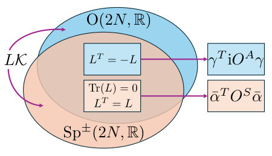
<figcaption class="paper-figure-caption"><b>Fig 1.</b> FIG. 1. The schematic relationship between anti-unitary sym- metry and order parameter set for Majorana fermion (up blue) and phase-space boson (down orange).</figcaption>
</figure>
<figure class="paper-figure-card">
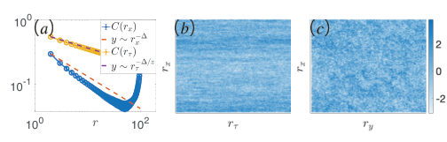
<figcaption class="paper-figure-caption"><b>Fig 2.</b> FIG. 3. An example of engineering scalar field ϕ for ∆= 0.5, z = 2. (a) Correlation decay along rx and rτ directions from 100 samples for size L = 100, Lτ = 200 with ∆τ = 0.05 are compared with the target power-law behaviors. (b,c) show a specific configuration cut with fixed ry and rτ respectively.</figcaption>
</figure>
<figure class="paper-figure-card">
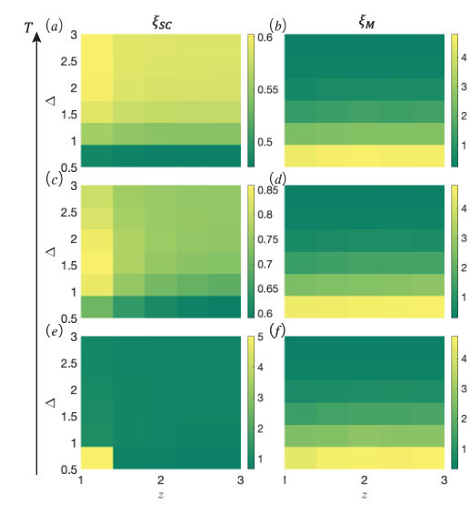
<figcaption class="paper-figure-caption"><b>Fig 3.</b> FIG. 4. Competition between superconducting and anti- ferromagnetic orders from correlation length ξSC in (a,c,e) and ξM in (b,d,f) as a function of critical exponents ∆, z. The imaginary-time length β is 0.1L, 0.2L, 0.3L for (a,b),(c,d),(e,f) where system size L = 12.</figcaption>
</figure>
<figure class="paper-figure-card">
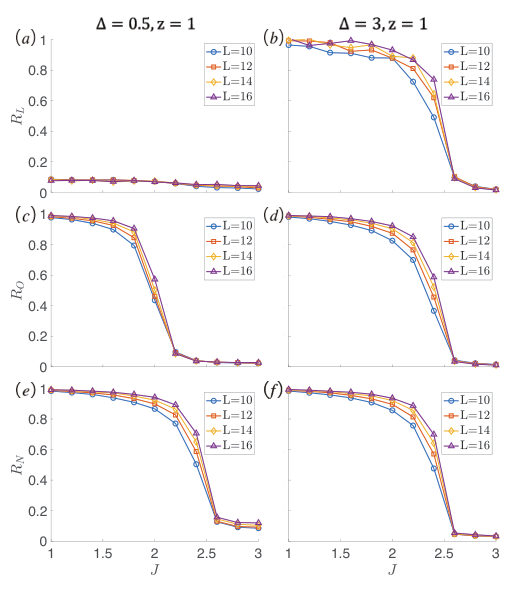
<figcaption class="paper-figure-caption"><b>Fig 4.</b> FIG. 5. Correlation ratio for different order parameters nT i lzσzni in (a,b), nT i l0σzni in (c,d) and nT i l0σxni in (e,f). (a,c,e) are results at critical exponents ∆= 0.5, z = 1 and (b,d,f) are results at ∆= 3, z = 1. The three dimensions are scaled together with system size L = 10, 12, 14, 16.</figcaption>
</figure>
<figure class="paper-figure-card">
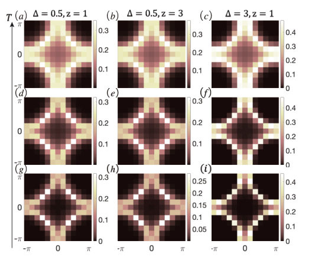
<figcaption class="paper-figure-caption"><b>Fig 5.</b> FIG. 6. Fermi surface indicated from G(β/2, k) at different temperature and critical exponents ∆, z. The imaginary-time length β is 0.1L, 0.2L, 0.3L for (a,b,c),(d,e,f),(g,h,i) where sys- tem size L = 12.</figcaption>
</figure>
</div>

<p><strong>Summary.</strong> This paper analyzes correlation functions in Fluctuating Gaussian States exhibiting anti-unitary symmetries, identifying two competing ordered phases: a saddle point phase and a non-local contraction phase. The authors use advanced correlation techniques and entanglement bounds to determine which phase dominates, showing that the non-local phase imposes severe constraints on the system's structure.</p>
<p><strong>Why it may be interesting.</strong> The connection between anti-unitary symmetries, the emergence of different ordered phases (saddle point vs. non-local contraction), and the constraints imposed by entanglement structure (PEPS/bond dimension) provides deep insights into the nature of quantum ground states and steady states.</p>
<details>
<summary>Detailed structure</summary>
<p><strong>Main problem.</strong> The study investigates bilinear order-parameter correlations in a specialized class of sign problem-free quantum systems known as Fluctuating Gaussian States (FGS). The core goal is to characterize the competition between different broken-symmetry phases.</p>
<p><strong>Main result.</strong> The system generally exhibits two competing phases—a saddle point phase and a non-local contraction phase—whose dominance depends on the stability of the fluctuation saddle point. Furthermore, the non-local contraction phase imposes stringent constraints on the required entanglement structure.</p>
<p><strong>Method.</strong> The analysis relies on calculating two-point correlation functions using Wick's theorem and decomposing observables into symmetry-related matrix bases. Theoretical bounds, such as those involving bond dimension, are also derived.</p>
<p><strong>Model / system.</strong> The model is Fluctuating Gaussian States (FGS) possessing anti-unitary symmetries, applicable to both fermionic and bosonic systems. These states are defined via a path integral decomposition over imaginary time slices.</p>
<p><strong>Key observables.</strong> Bilinear order-parameter correlations, two-point Green's functions, von Neumann entropy, and the average bond dimension ($\langle D_\phi 
angle$).</p>
<p><strong>Important parameters / regimes.</strong> The competition is governed by parameters related to the stability of the fluctuation saddle point, and the analysis involves varying coupling strengths ($\Delta$) and correlation lengths ($z$).</p>
<p><strong>Assumptions / limitations.</strong> The analysis assumes the existence of anti-unitary symmetries and utilizes approximations like the spectral function approximation for low-temperature properties.</p>
<p><strong>Figures summary.</strong> Figures schematically illustrate the relationship between anti-unitary symmetry and the order parameter set for different particle types, and a phase diagram is used to show the transition between the saddle point and non-local contraction phases.</p>
<p><strong>Paper structure.</strong> The paper progresses by defining the FGS framework and symmetries, calculating correlation functions for the two competing phases, deriving theoretical bounds relating entanglement to correlations, and finally discussing implications for non-equilibrium dynamics.</p>
</details>
<details>
<summary>Abstract</summary>
<p>We study bilinear order-parameter correlations in a general class of sign problem-free systems that are described by what we call Fluctuating Gaussian States (FGS) with anti-unitary symmetries, where the weight of each Gaussian measurement in the space-time path integral is positive-definite. Supported by Monte Carlo simulations on fluctuating Gaussian fermionic and bosonic examples, we argue that such systems generally exhibit two types of broken-symmetry phases: a \emph{saddle point phase} and a \emph{non-local contraction phase}, with the competition between the two determined by the stability of the fluctuation saddle point of FGS. Due to the Fermi liquid instability in fermionic FGS with anti-unitary symmetries, we also discuss the possibility of representing fermionic FGS with a particular Projected Entangled-Pair State (PEPS) ansatz, which we argue a certain construction provides an efficient description for the saddle point phase, but not for the non-local contraction phase. Finally, we discuss the potential implication of our result in non-equilibrium systems and stabilizing a target bilinear order.</p>
</details>
<p><sub><a href="#top">↑ back to top</a></sub></p>

<p><a id="paper-2609.01858"></a></p>
<h3 id="a-greedy-nearest-neighbor-approach-to-quantify-site-revisitation-comparing-two-sympatric-raven-species"><a href="http://arxiv.org/abs/2609.01858v1">A greedy nearest-neighbor approach to quantify site revisitation: comparing two sympatric raven species</a></h3>
<p><strong>Authors:</strong> Bar Ashkenazi, Miguel de Guinea, Michael Assaf, Ran Nathan<br>
<strong>Type:</strong> experiment · <strong>Category:</strong> statistical mechanics · <strong>PDF:</strong> <a href="https://arxiv.org/pdf/2609.01858v1">https://arxiv.org/pdf/2609.01858v1</a><br>
<strong>Analysis basis:</strong> full PDF text, analyzed in chunks
<strong>Topic relevance:</strong> <code>Keldysh / 2PI / non-Gaussian methods</code> <strong>1/5</strong> · <code>analog quantum simulation</code> <strong>1/5</strong> · <code>driven-dissipative phase transition</code> <strong>1/5</strong> · <code>methods for driven-dissipative</code> <strong>1/5</strong> · <code>non-equilibrium universality</code> <strong>1/5</strong> · <code>quantum measurements</code> <strong>1/5</strong> · <code>scars &amp; prethermalization</code> <strong>1/5</strong></p>
<div class="figure-strip-hint">↔ Scroll figures horizontally</div>
<div class="paper-figures-scroll">
<figure class="paper-figure-card">
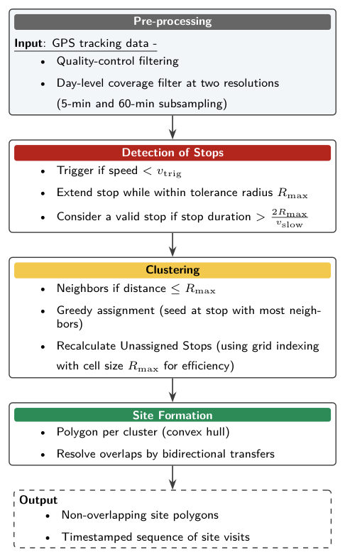
<figcaption class="paper-figure-caption"><b>Fig 1.</b> FIG. 1. Schematic overview of the site-detection method: pre- processing, detection of stops, clustering, and site formation.</figcaption>
</figure>
<figure class="paper-figure-card">
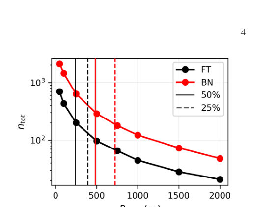
<figcaption class="paper-figure-caption"><b>Fig 2.</b> FIG. 2. Sensitivity of the mean total number of sites visited per individual (ntot), averaged across individuals within each species, to Rmax, for FT (black) and BN (red). Vertical lines mark the Rmax values at which the magnitude of the adjacent-point slope, |∆ntot/∆Rmax|, decreases to 50% (solid) and 25% (dashed) of its maximum observed value.</figcaption>
</figure>
<figure class="paper-figure-card">
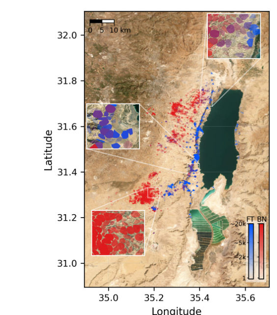
<figcaption class="paper-figure-caption"><b>Fig 3.</b> FIG. 3. All visited site polygons on a common basemap, colored by species (FT: blue; BN: red). Opacity is scaled by total site visit count: darker colors indicate more visits, see Appendix E. The insets show magnification (×4.4) windows of various site clusters.</figcaption>
</figure>
<figure class="paper-figure-card">
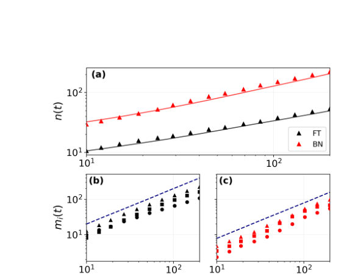
<figcaption class="paper-figure-caption"><b>Fig 4.</b> FIG. 4. Site discovery and revisitation dynamics. (a) Species- level mean n(t) versus days since first record (markers), with IMM simulations overlaid (lines) for FT (black) and BN (red). (b,c) Species-level mean cumulative visit counts mi(t) to the rank-i most visited sites (i = 1, 2, 3) versus days, shown separately for FT (b) and BN (c). Markers denote ranks: triangles i = 1, squares i = 2, and circles i = 3. The dashed lines are eye-guides indicating the IMM prediction for α = 1, mi(t) ∼t (vertically offset for clarity).</figcaption>
</figure>
<figure class="paper-figure-card">
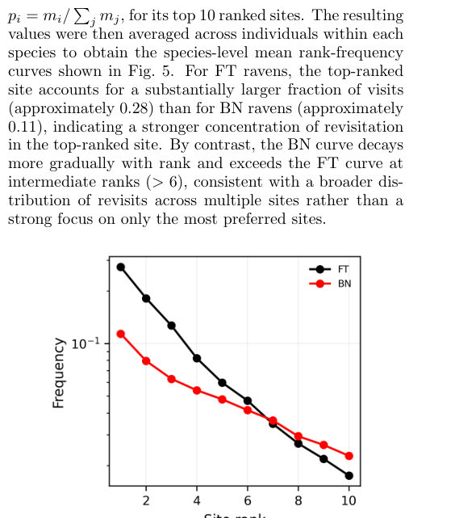
<figcaption class="paper-figure-caption"><b>Fig 5.</b> FIG. 5. Frequency over rank: species-level mean of pi = mi/ P j mj versus site rank i, for FT (black) and BN (red), com- puted over the first 200 days per individual; Rmax = 500 m.</figcaption>
</figure>
</div>

<p><strong>Summary.</strong> This study develops a robust computational framework to define ecological 'sites' from raw GPS tracking data for two raven species. By applying this framework and modeling movement using the Individual Mobility Model, the authors successfully quantify distinct space-use strategies, showing that the species differ in their rates of site discovery and spatial predictability.</p>
<p><strong>Why it may be interesting.</strong> The rigorous statistical framework developed for quantifying memory and site fidelity in complex, non-equilibrium spatial processes (like animal movement) shares conceptual parallels with modeling memory effects or non-Markovian dynamics in open quantum systems.</p>
<details>
<summary>Detailed structure</summary>
<p><strong>Main problem.</strong> The paper addresses the challenge of defining ecologically meaningful residence sites from raw GPS tracking data, which is complicated by heterogeneous sampling and uncertain boundaries.</p>
<p><strong>Main result.</strong> The study reveals distinct space-use strategies between two raven species: Brown-necked ravens show higher site entropy and a higher rate of novel site discovery compared to Fan-tailed ravens.</p>
<p><strong>Method.</strong> It employs a three-stage method involving greedy nearest-neighbor clustering on stop detections (derived from speed thresholds) to create non-overlapping, polygon-based site visit sequences.</p>
<p><strong>Model / system.</strong> The system is the movement ecology of two sympatric raven species (Fan-tailed and Brown-necked) in the Dead Sea region, analyzed using the non-Markovian Individual Mobility Model (IMM).</p>
<p><strong>Key observables.</strong> Site visit sequences, IMM parameters ($eta$ and $\alpha$), site entropy, and conditional entropy of site-to-site transitions.</p>
<p><strong>Important parameters / regimes.</strong> Maximum site size ($    ext{Rmax}$), stop detection thresholds ($v_{ ext{trig}}$), and the parameters governing the IMM ($eta$ for novel discovery, $\alpha$ for preferential return).</p>
<p><strong>Assumptions / limitations.</strong> The primary assumption is that sites are repeatedly and collectively used, and the method assumes that the non-Markovian IMM accurately captures the balance between novel site discovery and preferential return.</p>
<p><strong>Figures summary.</strong> Figures illustrate the spatial distribution of inferred stops using three different detection methods (speed-threshold, residence-time, recurse) and compare cluster-diameter distributions across these methods.</p>
<p><strong>Paper structure.</strong> The paper first details the site inference framework (greedy clustering on stop detections) and then applies this framework to model movement dynamics using IMM. It includes extensive validation by comparing the results against established, but computationally slower, site detection methods.</p>
</details>
<details>
<summary>Abstract</summary>
<p>A central challenge in movement ecology is to describe ecologically meaningful residence sites from raw tracking data due to heterogeneous sampling frequency and uncertain site boundaries. Here, we develop a greedy nearest-neighbor clustering approach with local reassignment and polygon-based site construction that generates timestamped sequences of site visits for each tracked individual, and apply it to nine years of GPS data from two sympatric raven species in the Dead Sea region---the Fan-tailed raven (\emph{Corvus rhipidurus}) and the Brown-necked raven (\emph{C. ruficollis}). Using the resulting visitation sequences, we quantify recursion patterns using the non-Markovian individual mobility model (IMM), which captures the balance between novel-site discovery $β$ and preferential return $α$. The inferred dynamics are consistent with IMM predictions and reveal clear interspecific differences: Brown-necked ravens continue to discover new sites at a higher rate (lower $β$), whereas Fan-tailed ravens show a steeper concentration of visits among top-ranked sites. Entropy analyses further separate the species, with Brown-necked ravens exhibiting higher site entropy and higher conditional entropy of site-to-site transitions. Together, these results provide a robust framework for describing interspecific differences in movement strategies that can be used to infer memory from GPS data and suggest distinct space-use strategies in two closely related sympatric species.</p>
</details>
<p><sub><a href="#top">↑ back to top</a></sub></p>

<p><a id="paper-2609.02665"></a></p>
<h3 id="survival-in-a-partially-reactive-wedge"><a href="http://arxiv.org/abs/2609.02665v1">Survival in a partially reactive wedge</a></h3>
<p><strong>Authors:</strong> Denis S. Grebenkov<br>
<strong>Type:</strong> theory · <strong>Category:</strong> statistical mechanics · <strong>PDF:</strong> <a href="https://arxiv.org/pdf/2609.02665v1">https://arxiv.org/pdf/2609.02665v1</a><br>
<strong>Analysis basis:</strong> full PDF text, analyzed in chunks
<strong>Topic relevance:</strong> <code>Keldysh / 2PI / non-Gaussian methods</code> <strong>1/5</strong> · <code>analog quantum simulation</code> <strong>1/5</strong> · <code>correlated / nonlocal dissipation</code> <strong>1/5</strong> · <code>driven-dissipative phase transition</code> <strong>1/5</strong> · <code>methods for driven-dissipative</code> <strong>1/5</strong> · <code>non-equilibrium universality</code> <strong>1/5</strong></p>
<div class="figure-strip-hint">↔ Scroll figures horizontally</div>
<div class="paper-figures-scroll">
<figure class="paper-figure-card">
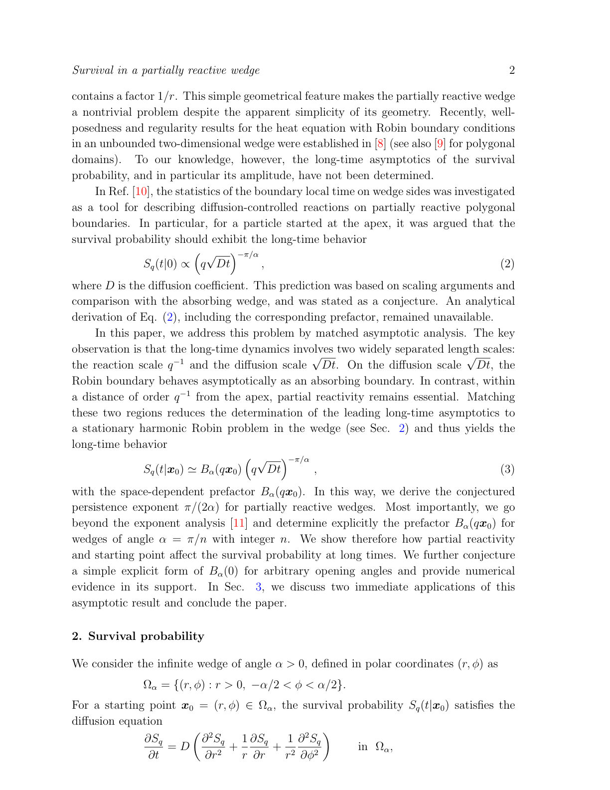
<figcaption class="paper-figure-caption"><b>Fig 1.</b> Low-resolution page preview, page 2</figcaption>
</figure>
<figure class="paper-figure-card">
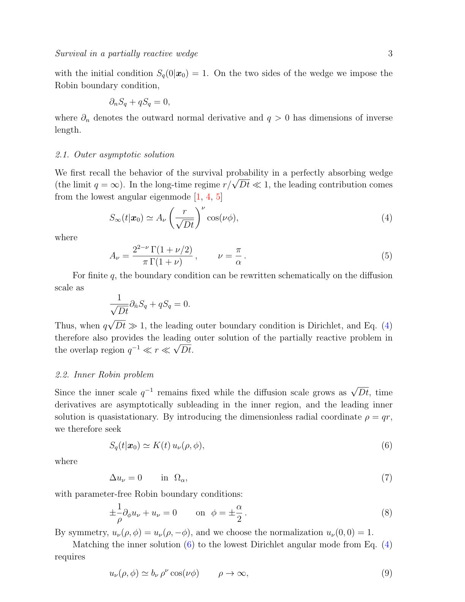
<figcaption class="paper-figure-caption"><b>Fig 2.</b> Low-resolution page preview, page 3</figcaption>
</figure>
<figure class="paper-figure-card">
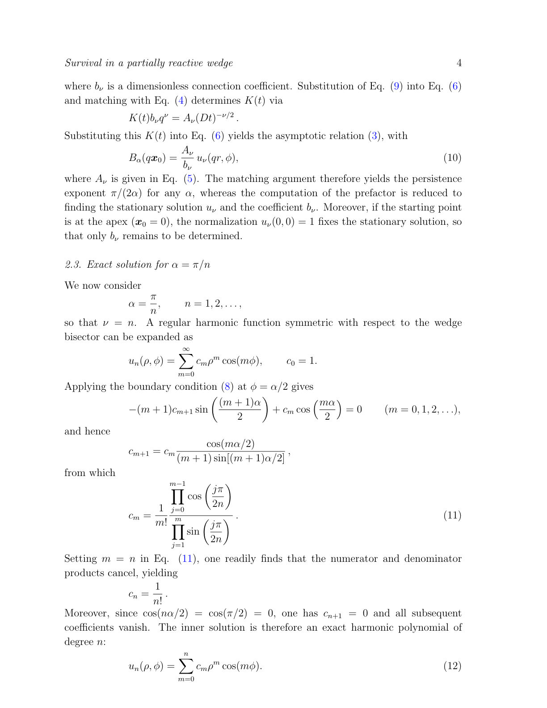
<figcaption class="paper-figure-caption"><b>Fig 3.</b> Low-resolution page preview, page 4</figcaption>
</figure>
<figure class="paper-figure-card">
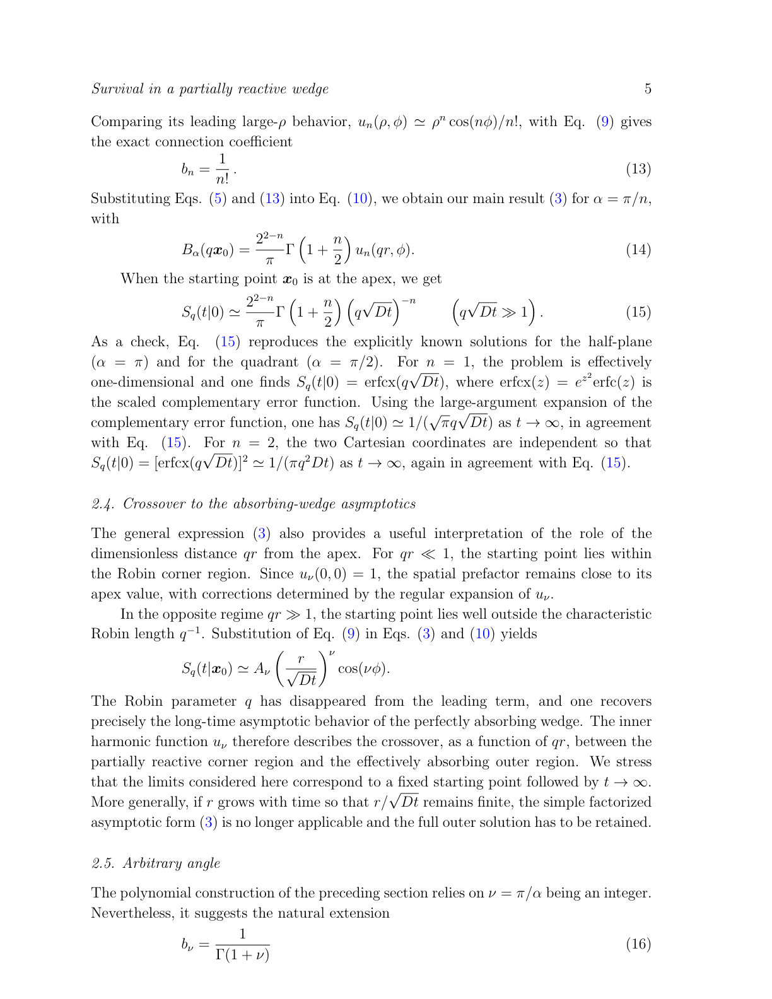
<figcaption class="paper-figure-caption"><b>Fig 4.</b> Low-resolution page preview, page 5</figcaption>
</figure>
<figure class="paper-figure-card">
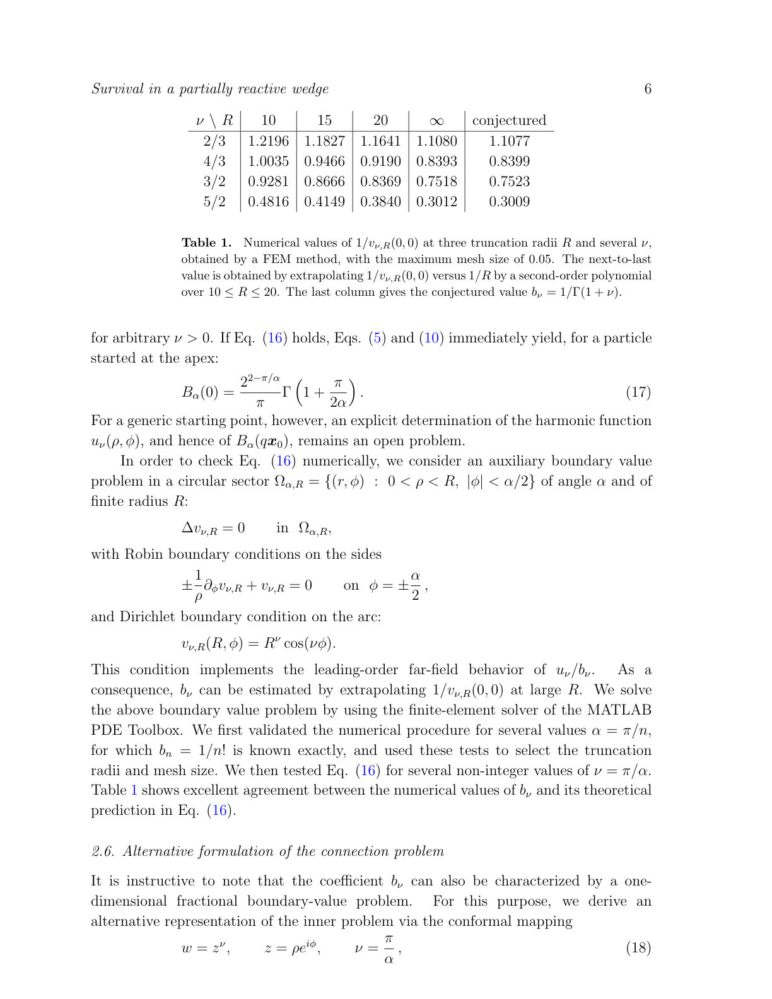
<figcaption class="paper-figure-caption"><b>Fig 5.</b> Low-resolution page preview, page 6</figcaption>
</figure>
</div>

<p><strong>Summary.</strong> This paper analyzes the long-time decay of survival probability for Brownian motion in a wedge with partially reactive boundaries. Using matched asymptotic analysis, the authors derive the power-law decay exponent and explicitly calculate the prefactor for specific wedge angles. The work provides deep insights into boundary-induced transport phenomena in confined geometries.</p>
<p><strong>Why it may be interesting.</strong> The study of anomalous diffusion and boundary effects in confined geometries is crucial for understanding transport phenomena in mesoscopic systems, which has relevance to quantum transport and open quantum systems.</p>
<details>
<summary>Detailed structure</summary>
<p><strong>Main problem.</strong> The paper investigates the long-time power-law decay of the survival probability of a Brownian particle diffusing in a planar wedge whose sides exhibit partial reactivity.</p>
<p><strong>Main result.</strong> The long-time survival probability decays as $S_q(t|\mathbf{x}_0) \simeq B_\alpha(q\mathbf{x}_0) (q/\sqrt{Dt})^{-\pi/\alpha}$, and the prefactor $B_\alpha$ is explicitly determined for specific angles $\alpha = \pi/n$.</p>
<p><strong>Method.</strong> The primary method is matched asymptotic analysis, relating the long-time behavior to a stationary harmonic Robin problem near the apex. Numerical methods (FEM) and conformal mapping are also used to verify conjectures.</p>
<p><strong>Model / system.</strong> The system is a Brownian particle diffusing in an infinite planar wedge of angle $\alpha$. The boundaries are modeled by Robin boundary conditions, introducing a characteristic length scale $q^{-1}$ related to the partial reactivity.</p>
<p><strong>Key observables.</strong> Survival probability $S_q(t|\mathbf{x}_0)$, persistence exponent ($\pi/\alpha$), and the prefactor $B_\alpha(q\mathbf{x}_0)$.</p>
<p><strong>Important parameters / regimes.</strong> Wedge opening angle $\alpha$, Robin parameter $q$, and time $t$.</p>
<p><strong>Assumptions / limitations.</strong> The analysis relies on matched asymptotic expansions, assuming separation between the reaction scale ($q^{-1}$) and the diffusion scale ($\sqrt{Dt}$).</p>
<p><strong>Figures summary.</strong> Table 1 provides numerical values for connection coefficients $1/v_{
u,R}(0, 0)$ and compares them to the conjectured theoretical value $1/\Gamma(1 + 
u)$.</p>
<p><strong>Paper structure.</strong> The paper develops the asymptotic formula for survival probability using matched asymptotics, derives explicit prefactors for specific angles, and then uses numerical/conformal mapping techniques to confirm conjectures regarding the connection coefficients and derive the PDFs for boundary local time and first-crossing time.</p>
</details>
<details>
<summary>Abstract</summary>
<p>We investigate the power-law decay of the survival probability of a Brownian particle diffusing in an infinite planar wedge whose two sides are partially reactive and described by Robin boundary conditions. We employ matched asymptotic analysis to relate the long-time asymptotics to a stationary harmonic Robin problem near the apex. This approach determines the persistence exponent for arbitrary opening angles and yields the prefactor explicitly for the family of wedges with $α=π/n$ ($n=1,2,\ldots$). A simple extension of the apex prefactor to arbitrary angles is conjectured and supported numerically. This asymptotic behavior describes the crossover to the well-known result for perfectly absorbing wedges. As immediate applications, we also deduce the long-time behavior of the probability density function of the boundary local time on wedge sides, as well as the probability density function of the associated first-crossing time.</p>
</details>
<p><sub><a href="#top">↑ back to top</a></sub></p>

<p><a id="paper-2609.01848"></a></p>
<h3 id="error-accumulation-in-dissipative-quantum-circuits"><a href="http://arxiv.org/abs/2609.01848v1">Error accumulation in dissipative quantum circuits</a></h3>
<p><strong>Authors:</strong> Nadir Samos-Sáenz de Buruaga, Rodrigo M. C. Pereira, Karol Życzkowski, Sergey Denisov, Pedro Ribeiro<br>
<strong>Type:</strong> theory · <strong>Category:</strong> quantum information and computing · <strong>PDF:</strong> <a href="https://arxiv.org/pdf/2609.01848v1">https://arxiv.org/pdf/2609.01848v1</a><br>
<strong>Analysis basis:</strong> full PDF text, analyzed in chunks
<strong>Topic relevance:</strong> <code>correlated / nonlocal dissipation</code> <strong>1/5</strong> · <code>driven-dissipative phase transition</code> <strong>1/5</strong> · <code>methods for driven-dissipative</code> <strong>1/5</strong> · <code>non-equilibrium universality</code> <strong>1/5</strong></p>
<div class="figure-strip-hint">↔ Scroll figures horizontally</div>
<div class="paper-figures-scroll">
<figure class="paper-figure-card">
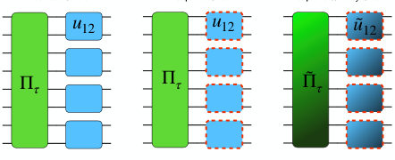
<figcaption class="paper-figure-caption"><b>Fig 1.</b> Figure 1: Circuit layer used throughout the paper. (a) The ideal layer is a random permutation Πτ followed by L/2 two-qubit gates u2m−1,2m sampled from CUE(4). (b) In the dissipative model each two-qubit unitary is replaced by a diluted unitary channel with strength κ. (c) In Sec. 4 we also include unitary two-qubit gate noise and faulty implementations of the permutation.</figcaption>
</figure>
<figure class="paper-figure-card">
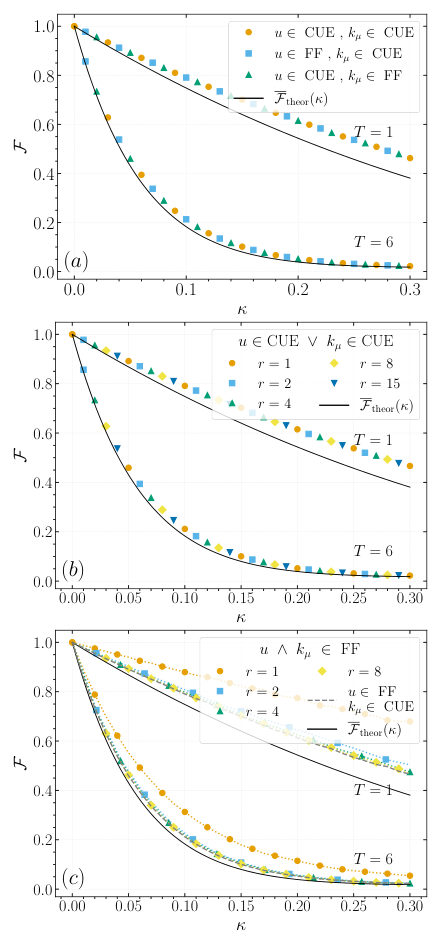
<figcaption class="paper-figure-caption"><b>Fig 2.</b> Figure 2: Mean fidelity decay for L = 6. (a) When either the two-qubit unitaries or the dissipative Kraus operators are sampled from a generic ensemble, the nu- merical data collapse onto Eq. (17). (b) In the same scenario than above, the mean fidelity is insensitive to the dissipative Kraus rank r. (c) When both the uni- taries and the dissipative component are restricted to free-fermion dynamics, a finite-depth rank dependence remains, but the data approach the generic behavior at larger depth given by the gray dashed line. Notice that the random permutations are implemented as fermionic- mode shuffles via fermionic SWAP decompositions.</figcaption>
</figure>
<figure class="paper-figure-card">
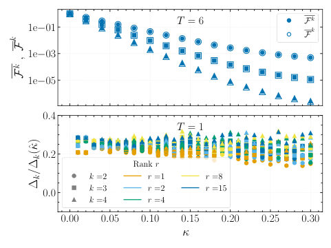
<figcaption class="paper-figure-caption"><b>Fig 3.</b> Figure 3: Concentration around the average fidelity. Top: comparison between Fk and F k as functions of κ for L = 6. Bottom: numerical test of the ansatz Eq. (24); for one layer, g(r, 1) = 1/r collapses the data for the ranks and moments shown. For generic depth, g(r, T) is unknown and captures the imperfections of the ansatz.</figcaption>
</figure>
<figure class="paper-figure-card">
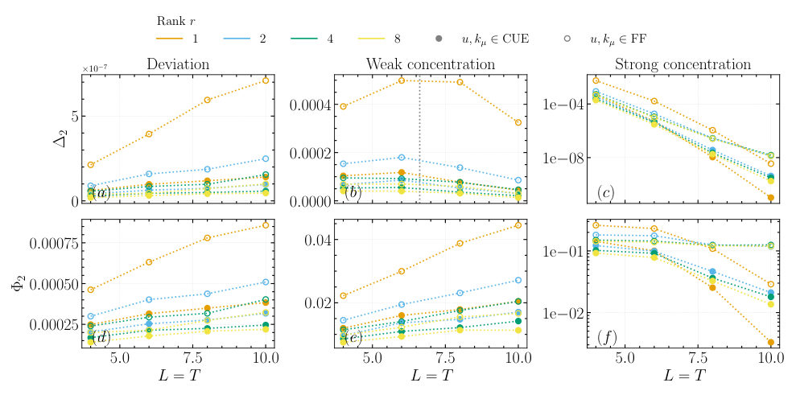
<figcaption class="paper-figure-caption"><b>Fig 4.</b> Figure 4: Scaling with system size of ∆2 and Φ2 for square circuits, T = L. The three columns show weak, intermediate, and strong dissipation (κ = 0.00005, 0.025, 0.3 respectively). In the weak case, ∆2 and Φ2 grow over the accessible sizes. In the intermediate case, ∆2 is already small while the relative fluctuation Φ2 still grows. In the strong case, both quantities decrease with system size. The dashed line in panel (b) marks the prediction for Lmax from Eq. (25).</figcaption>
</figure>
<figure class="paper-figure-card">
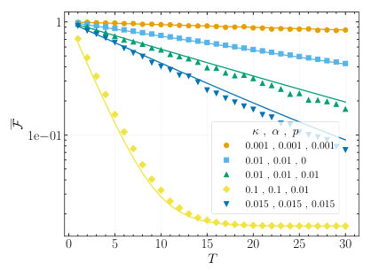
<figcaption class="paper-figure-caption"><b>Fig 5.</b> Figure 5: Average fidelity of circuit of L = 6 as a func- tion of depth T for models with rank r = 1 for several values of unitary noise α, faulty permutations p and dis- sipation strength κ. Solid lines are given by Eq. (38).</figcaption>
</figure>
</div>

<p><strong>Summary.</strong> This paper analyzes error accumulation in quantum processors by modeling them as dissipative random quantum circuits. Using fidelity as a diagnostic, the authors derive a universal scaling law for the average fidelity decay dependent only on dissipation strength and circuit depth. This provides essential theoretical insight into noise resilience for current quantum computing hardware.</p>
<p><strong>Why it may be interesting.</strong> This work provides crucial theoretical tools for characterizing noise resilience in NISQ devices, showing how fundamental physical parameters govern decoherence regardless of specific gate implementations.</p>
<details>
<summary>Detailed structure</summary>
<p><strong>Main problem.</strong> The paper investigates how information degrades in quantum processors due to dissipation and decoherence within random quantum circuits.</p>
<p><strong>Main result.</strong> The average fidelity decay is found to be universal, depending only on the dissipation strength, system size, and circuit depth, and is independent of the microscopic details like the Kraus rank.</p>
<p><strong>Method.</strong> The authors use random-matrix approximations and derive closed-form expressions for the ensemble-averaged fidelity, analyzing the decay across different noise regimes.</p>
<p><strong>Model / system.</strong> The model is a dissipative random quantum circuit (RQC) where each two-qubit gate is treated as a 'diluted unitary' channel, interpolating between the ideal unitary and a random dissipative channel.</p>
<p><strong>Key observables.</strong> State Fidelity ($F$), which quantifies the deviation between the ideal and noisy output states.</p>
<p><strong>Important parameters / regimes.</strong> Dissipation strength ($\kappa$), coherent two-qubit gate-error strength ($\alpha$), and connectivity-error probability ($p$).</p>
<p><strong>Assumptions / limitations.</strong> The analysis relies on approximating the random permutations with Haar-random global unitaries to derive an exact closed-form expression for the average fidelity.</p>
<p><strong>Figures summary.</strong> Figure 1 illustrates the circuit layer comparing faultless, dissipative, and combined dissipative/noisy circuits. Figure 2 compares the theoretical mean fidelity decay against different ensemble assumptions.</p>
<p><strong>Paper structure.</strong> The paper progresses by defining the noisy evolution via diluted unitaries, deriving the average fidelity using random matrix techniques, establishing the universal scaling laws, and finally deriving a closed-form expression incorporating multiple error parameters.</p>
</details>
<details>
<summary>Abstract</summary>
<p>Present-day quantum processors are open systems in which dissipation and decoherence degrade the information carried by a quantum state as it propagates through a circuit. We study this degradation in dissipative random quantum circuits, modeling each two-qubit gate as a diluted unitary that interpolates between the intended unitary operation and a random dissipative quantum channel. Using the fidelity between the ideal and noisy output states as a diagnostic, we show that sufficiently random unitary gates or dissipative Kraus operators lead to a universal decay of the average fidelity. This decay is determined only by the dissipation strength, system size, and circuit depth, while microscopic details of the gates and noise, including the Kraus rank, appear only in subleading corrections to higher moments. We derive a closed-form expression for the average fidelity in terms of three physically meaningful error parameters, dissipation strength, coherent two-qubit gate-error strength, and connectivity-error probability. Finally, we identify the cases when dissipative effects can be reproduced by an unitary-noise model and when dissipation-induced decoherence remains distinguishable from coherent noise at the level of the average fidelity.</p>
</details>
<p><sub><a href="#top">↑ back to top</a></sub></p>

<p><a id="paper-2609.02594"></a></p>
<h3 id="multivariate-hyperdensity-functional-theory-for-inhomogeneous-equilibrium-fluids-from-first-principles-to-simulation-based-machine-learning"><a href="http://arxiv.org/abs/2609.02594v1">Multivariate hyperdensity functional theory for inhomogeneous equilibrium fluids: From first principles to simulation-based machine learning</a></h3>
<p><strong>Authors:</strong> Florian Sammüller, Matthias Schmidt<br>
<strong>Type:</strong> theory · <strong>Category:</strong> statistical mechanics · <strong>PDF:</strong> <a href="https://arxiv.org/pdf/2609.02594v1">https://arxiv.org/pdf/2609.02594v1</a><br>
<strong>Analysis basis:</strong> full PDF text, analyzed in chunks
<strong>Topic relevance:</strong> <code>Keldysh / 2PI / non-Gaussian methods</code> <strong>1/5</strong> · <code>analog quantum simulation</code> <strong>1/5</strong> · <code>methods for driven-dissipative</code> <strong>1/5</strong> · <code>quantum measurements</code> <strong>1/5</strong></p>
<div class="figure-strip-hint">↔ Scroll figures horizontally</div>
<div class="paper-figures-scroll">
<figure class="paper-figure-card">
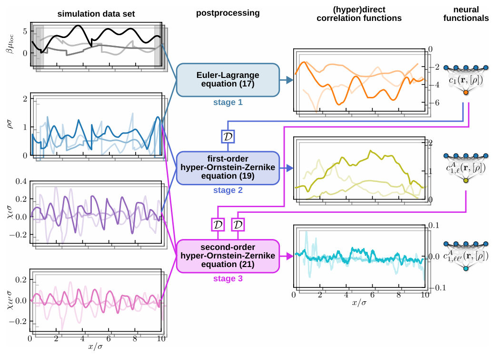
<figcaption class="paper-figure-caption"><b>Fig 1.</b> FIG. 1. Multistage workflow for machine learning multivariate hyperdensity functionals. A grand canonical Monte Carlo simulation data set (left column) of equilibria of a considered fluid type serves as ground truth. Inhomogeneity is induced in each simulation by a randomly chosen (scaled) local chemical potential βµloc(r) = βµ −βVext(r) and the resulting set of one-body profiles ρ(r), χℓ(r), and χℓℓ′(r) is sampled. We depict exemplary data for the one-dimensional hard rod fluid where r = x. As hyperobservables of choice, we select the total number of particles, ˆA1, and the number of particles in the largest cluster, ˆA2, see the text for a detailed specification. Postprocessing of the...</figcaption>
</figure>
<figure class="paper-figure-card">
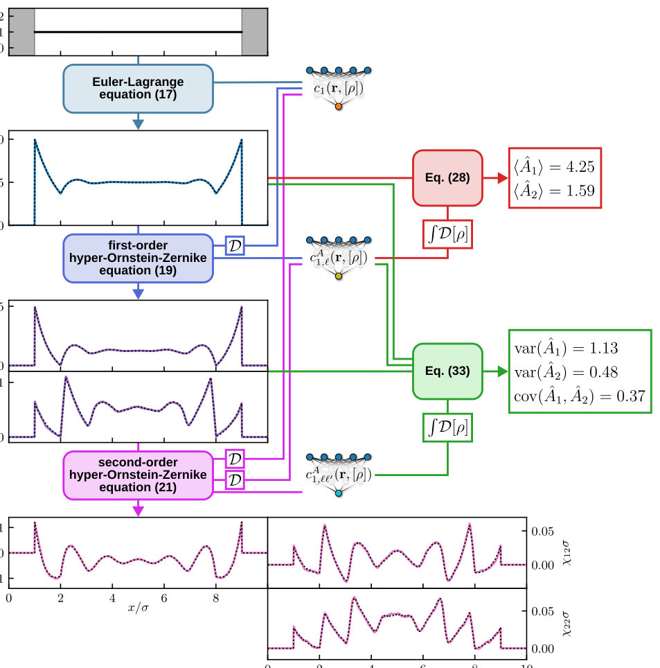
<figcaption class="paper-figure-caption"><b>Fig 2.</b> FIG. 2. Prediction workflow for evaluating averages and covariances of chosen hyperobservables using neural hyperdensity functionals. As a prototypical case, we depict the one-dimensional (r = x) hard rod fluid under hard-wall confinement with walls at positions x/σ = 1 and x/σ = 9. The chosen hyperobservables are the total number of particles, ˆA1, and the number of particles in the largest cluster, ˆA2, see text. Via standard solution of the Euler-Lagrange equation (17) with the neural functional c1(r, [ρ]), the density profile ρ(x) corresponding to the imposed (scaled) local chemical potential βµloc(x) is obtained. The associated first-order hyperfluctuation profiles χℓ(x), where ℓ= 1, 2...</figcaption>
</figure>
<figure class="paper-figure-card">
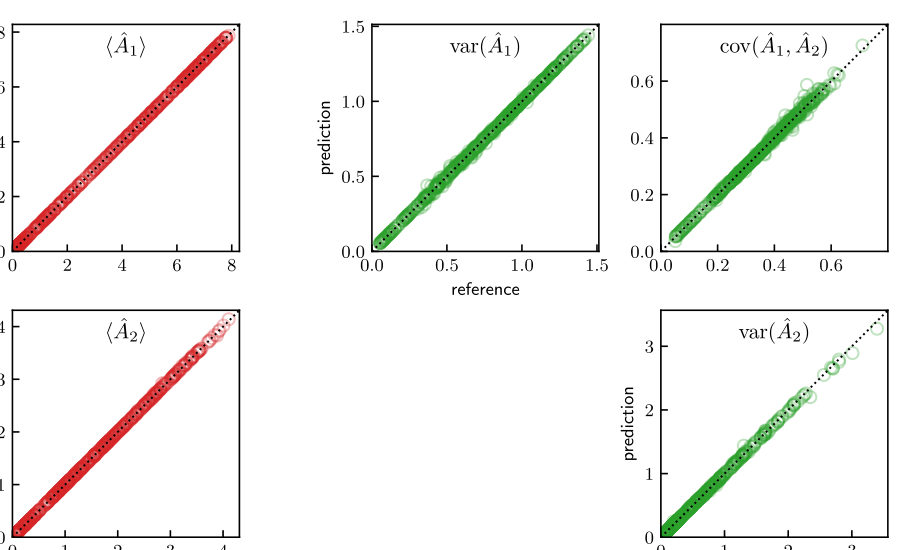
<figcaption class="paper-figure-caption"><b>Fig 3.</b> FIG. 3. Predictions for a test data set of 512 simulations that have not been included in the training; see Fig. 1 for an illustration of the underlying machine learning protocol and Fig. 2 for the prediction scheme. As before, the chosen hyperobservables are the total number of particles, ˆA1, and the number of particles in the largest cluster, ˆA2, see text. All relevant averages ⟨ˆA1⟩ and ⟨ˆA2⟩, variances var( ˆA1) and var( ˆA2), and the covariance cov( ˆA1, ˆA2) are recovered accurately across the entire test data set via the neural multivariate hyperdensity functional framework.</figcaption>
</figure>
<figure class="paper-figure-card">
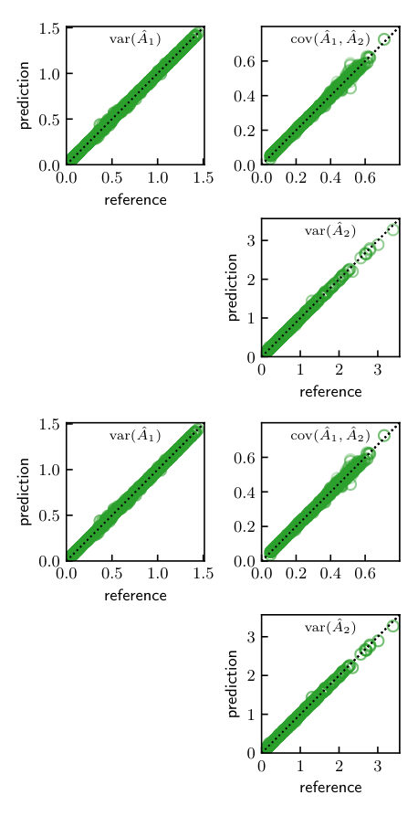
<figcaption class="paper-figure-caption"><b>Fig 4.</b> FIG. 4. Results for variances and covariances evaluated via Eq. (34), where ℓand ℓ′ in the second term on the right-hand side is exchanged (top), and via Eq. (35) (bottom). Both routes yield numerically equivalent results across the entire test data set, confirming the equivalence of both expressions and the exchange symmetry of the indices ℓand ℓ′.</figcaption>
</figure>
</div>

<p><strong>Summary.</strong> This work presents a multivariate extension of hyperdensity functional theory to analyze multiple correlated observables in inhomogeneous fluids. It derives exact theoretical relationships, such as hyper-Ornstein-Zernike equations, governing the statistical interrelations between these observables. By coupling this rigorous theory with machine learning, the authors provide a powerful, systematic tool for predicting complex many-body behavior from simulation data.</p>
<p><strong>Why it may be interesting.</strong> While focused on classical fluids, the rigorous mathematical framework for calculating higher-order correlation functions and the explicit integration with machine learning for functional approximation are highly relevant methodologies for developing advanced theoretical tools in complex quantum many-body systems.</p>
<details>
<summary>Detailed structure</summary>
<p><strong>Main problem.</strong> The paper develops a multivariate generalization of hyperdensity functional theory (HDFT) to systematically investigate the equilibrium properties and interrelations of multiple, arbitrary observables in inhomogeneous classical many-body systems.</p>
<p><strong>Main result.</strong> The framework establishes universal density functionals for averages, variances, and covariances of these observables, and derives exact hyper-Ornstein-Zernike equations linking these correlation measures.</p>
<p><strong>Method.</strong> The theory is built upon extending the Mermin-Evans classical density functional mapping to an extended multivariate ensemble, and its practical implementation is achieved by integrating the functional structure with supervised machine learning via neural networks.</p>
<p><strong>Model / system.</strong> The theory is applied to classical many-body systems, illustrated specifically by studying the clustering behavior in confined hard rod fluids.</p>
<p><strong>Key observables.</strong> Hyperobservables ($\{\hat{A}_\ell\}$), equilibrium averages, variances, covariances, and hyperfluctuation profiles ($\chi_{\hat{A}}(\mathbf{r})$).</p>
<p><strong>Important parameters / regimes.</strong> Temperature (via $eta$), chemical potential ($\mu$), and the coupling constants ($\lambda_\ell$) associated with the hyperobservables.</p>
<p><strong>Assumptions / limitations.</strong> The theory relies on the formal structure derived from the Mermin-Evans map, and practical calculation requires approximating the functionals using machine learning techniques.</p>
<p><strong>Figures summary.</strong> Not specified by the notes.</p>
<p><strong>Paper structure.</strong> The paper first introduces the multivariate HDFT framework via the extended ensemble, derives the universal density functionals and the hyper-Ornstein-Zernike equations, and then details the mathematical machinery using functional derivatives (Gateaux derivatives) to compute these higher-order correlation functions, concluding with an application to hard rod fluid clustering.</p>
</details>
<details>
<summary>Abstract</summary>
<p>Hyperdensity functional theory facilitates the investigation of the equilibrium behavior of a general order parameter or statistical mechanical observable in spatially inhomogeneous classical many-body systems. The approach is based on applying the exact Mermin-Evans classical density functional mapping to an extended ensemble. Here we present the multivariate generalization for investigating simultaneously the properties and interrelations of several different hyperobservables of choice. The resulting framework gives rise to a systematic characterization and prediction scheme for general many-body phenomena. All pertinent equilibrium averages, variances, and covariances constitute universal density functionals, as we demonstrate explicitly. Associated one-body hyperfluctuation profiles quantify the degree of correlation of the local density with first- and second-order combinations of hyperobservables. These multivariate hyperfluctuation profiles are accessible in many-body simulations and they satisfy exact hyper-Ornstein-Zernike equations, which we derive from the minimization principle in the extended multivariate ensemble. The formal structure of the theory integrates naturally with supervised machine learning, which renders all hyperdensity functionals accessible in practice via training of neural networks on simulation data. We demonstrate all salient techniques using the illustrative case of clustering in confined hard rod fluids, thereby choosing the total number of particles and the largest cluster size as the representative hyperobservables of interest. Our numerical methodology enables the efficient and successful prediction of all statistical quantities induced by the chosen hyperobservables, which we verify via comparison to test data and which we attribute to the tight interplay of first-principles and machine-learning concepts that our general approach combines.</p>
</details>
<p><sub><a href="#top">↑ back to top</a></sub></p>

<p><a id="paper-2609.02692"></a></p>
<h3 id="response-of-a-model-glass-to-athermal-quasistatic-pinching"><a href="http://arxiv.org/abs/2609.02692v1">Response of a Model Glass to Athermal Quasistatic Pinching</a></h3>
<p><strong>Authors:</strong> Takumi Nagasawa, Kirsten Martens, Jean-Louis Barrat, Misaki Ozawa<br>
<strong>Type:</strong> theory · <strong>Category:</strong> disordered systems and neural networks · <strong>PDF:</strong> <a href="https://arxiv.org/pdf/2609.02692v1">https://arxiv.org/pdf/2609.02692v1</a><br>
<strong>Analysis basis:</strong> full PDF text, analyzed in chunks
<strong>Topic relevance:</strong> <code>Frenkel-Kontorova</code> <strong>1/5</strong> · <code>analog quantum simulation</code> <strong>1/5</strong> · <code>non-equilibrium universality</code> <strong>1/5</strong> · <code>scars &amp; prethermalization</code> <strong>1/5</strong></p>
<div class="figure-strip-hint">↔ Scroll figures horizontally</div>
<div class="paper-figures-scroll">
<figure class="paper-figure-card">
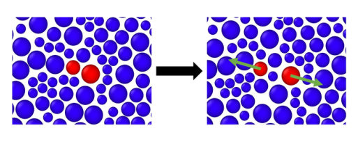
<figcaption class="paper-figure-caption"><b>Fig 1.</b> FIG. 1. Schematic illustration of the pinching simulation. A randomly selected pair of particles (shown in red) is subjected to a force dipole. The two particles, initially in contact and forming a local cage (left), are separated by pinching, leading to cage breaking in the form of a localized plastic event (right).</figcaption>
</figure>
<figure class="paper-figure-card">
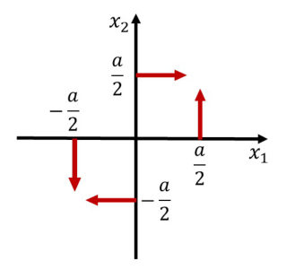
<figcaption class="paper-figure-caption"><b>Fig 2.</b> FIG. 3. Schematic representation of a shear transformation.</figcaption>
</figure>
<figure class="paper-figure-card">
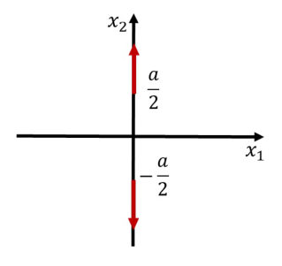
<figcaption class="paper-figure-caption"><b>Fig 3.</b> FIG. 2. Schematic representation of pinching. Two equal and opposite forces, shown by red arrows, are separated by a distance 𝑎.</figcaption>
</figure>
<figure class="paper-figure-card">
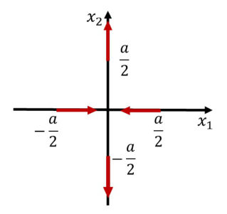
<figcaption class="paper-figure-caption"><b>Fig 4.</b> FIG. 4. Schematic representation of pinching-contraction</figcaption>
</figure>
<figure class="paper-figure-card">
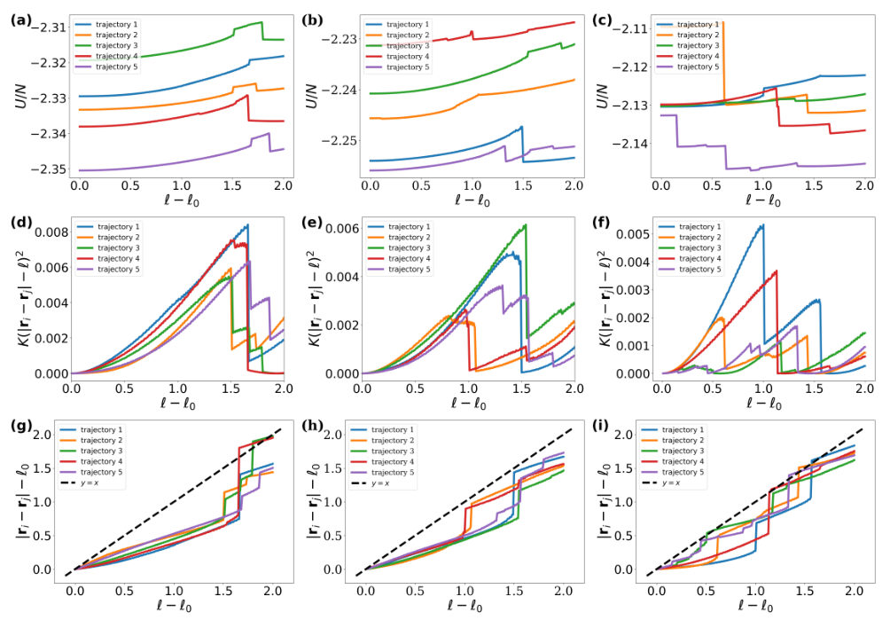
<figcaption class="paper-figure-caption"><b>Fig 5.</b> FIG. 5. (a–c): Potential energy 𝑈/𝑁as a function of the control parameter increment Δℓ= ℓ−ℓ0 for five pinching trajectories obtained with the length-controlled protocol at 𝑇ini = 0.25 (a), 0.35 (b), and 1.0 (c). (d-f): Spring energy 𝐾|r𝑖−r𝑗| −ℓ2 as a function of the control parameter increment Δℓfor five pinching trajectories obtained with the length-controlled protocol at 𝑇ini = 0.25 (d), 0.35 (e), and 1.0 (f). (g–i): The corresponding actual separation increment |r𝑖−r𝑗| −ℓ0 as a function of Δℓ= ℓ−ℓ0 for 𝑇ini = 0.25 (g), 0.35 (h), and 1.0 (i). The dashed straight lines correspond to 𝑦= 𝑥.</figcaption>
</figure>
</div>

<p><strong>Summary.</strong> This work numerically investigates how amorphous solids respond mechanically when subjected to localized force dipoles, or 'pinching.' The study reveals a clear transition from linear elastic behavior at small deformations to complex plastic rearrangements at larger extensions. The results show that the resulting plasticity depends critically on the initial stability of the glass, providing a minimal local probe into the material's collective mechanical response.</p>
<p><strong>Why it may be interesting.</strong> While focused on classical mechanics, the study of amorphous solids, yielding, and the transition between elastic and plastic regimes shares conceptual links with understanding energy landscapes and structural relaxation in complex quantum many-body systems.</p>
<details>
<summary>Detailed structure</summary>
<p><strong>Main problem.</strong> The paper investigates the mechanical response of amorphous solids to localized force dipoles (pinching) under athermal quasistatic conditions.</p>
<p><strong>Main result.</strong> The response transitions from an elastic, long-range power-law decay regime to a plastic regime where rearrangements can be localized (stable glasses) or system-spanning (poorly annealed glasses).</p>
<p><strong>Method.</strong> Numerical simulations using athermal quasistatic methods, complemented by theoretical analysis based on linear elasticity theory and multipolar expansions.</p>
<p><strong>Model / system.</strong> The system modeled is an amorphous solid (model glass) composed of interacting particles, whose mechanical response is probed by applying a controlled force dipole (pinching).</p>
<p><strong>Key observables.</strong> Displacement field u(x), plastic activity patterns (localized vs. delocalized), potential energy evolution, and the principal axis of plastic deformation.</p>
<p><strong>Important parameters / regimes.</strong> Imposed extension (tuning from elastic to plastic), glass stability (well-annealed vs. poorly annealed), and the force dipole strength.</p>
<p><strong>Assumptions / limitations.</strong> The analysis assumes the continuum description of linear elasticity remains valid down to particle-scale distances, and the protocol involves athermal quasistatic loading.</p>
<p><strong>Figures summary.</strong> Figures schematically show the pinching process (initial contact to force dipole separation) and illustrate the evolution of potential energy and displacement fields under different loading protocols.</p>
<p><strong>Paper structure.</strong> The paper progresses by first establishing the elastic response to pinching, then analyzing the transition to plasticity based on glass stability, and finally introducing advanced diagnostics like the principal axis of deformation to characterize the resulting rearrangements.</p>
</details>
<details>
<summary>Abstract</summary>
<p>We numerically investigate the mechanical response of amorphous solids to localized force dipoles, referred to as pinching, using athermal quasistatic simulations of model glasses with varying degrees of stability. We employ a control parameter, the imposed extension, corresponding to the increase in rest length between the two pinched particles relative to their initial separation. Increasing this extension allows us to continuously tune the system from the elastic to the plastic regime. For small extensions, the response remains elastic. In this regime, the displacement field induced by pinching is well described by linear elasticity and exhibits a long-range power-law decay consistent with dipolar forcing. Averaged responses display anisotropic, quadrupolar-like patterns, with quantitative agreement between simulations and analytical predictions. This continuum description remains valid down to particle-scale distances. As the imposed extension increases, the response becomes plastic. Pinching can then trigger either localized or system-spanning rearrangements, depending on glass stability. Well-annealed glasses exhibit localized plastic events, whereas poorly annealed systems display delocalized cascades. We introduce a method to extract the principal axis of plastic deformation and analyze the associated displacement fields and plastic activity. Overall, our results demonstrate that pinching provides a minimal local probe of amorphous solids. The resulting response, governed by both glass stability and imposed extension, offers insight into the interplay between elasticity, elementary rearrangements, and the emergence of collective plasticity.</p>
</details>
<p><sub><a href="#top">↑ back to top</a></sub></p>

<p><a id="paper-2609.02373"></a></p>
<h3 id="percolation-dynamics-in-optimization-variance-cascades-and-discrete-scale-invariance"><a href="http://arxiv.org/abs/2609.02373v1">Percolation Dynamics in Optimization : Variance Cascades and Discrete Scale Invariance</a></h3>
<p><strong>Authors:</strong> Sai Niranjan Ramachandran, Suvrit Sra<br>
<strong>Type:</strong> both · <strong>Category:</strong> disordered systems and neural networks · <strong>PDF:</strong> <a href="https://arxiv.org/pdf/2609.02373v1">https://arxiv.org/pdf/2609.02373v1</a><br>
<strong>Analysis basis:</strong> full PDF text, analyzed in chunks
<strong>Topic relevance:</strong> <code>analog quantum simulation</code> <strong>1/5</strong> · <code>driven-dissipative phase transition</code> <strong>1/5</strong> · <code>non-equilibrium universality</code> <strong>1/5</strong></p>
<div class="figure-strip-hint">↔ Scroll figures horizontally</div>
<div class="paper-figures-scroll">
<figure class="paper-figure-card">
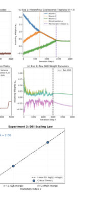
<figcaption class="paper-figure-caption"><b>Fig 1.</b> Figure 1: Topological Condensation and Fragmentation: (Top) Kinematic verification of the theoretical λ = 2 DSI baseline. (Middle &amp; Bottom) Empirical SGD dynamics. The condensation phase (t &lt; 3000) exhibits sequential DSI variance peaks (p1, p2) with a log-linear progression close to λ ≈2.00 (fit through two points; see main text). The task shift at t = 3000 reverses the stability inequality and is followed by a reactive fragmentation peak (p3). Zoom for clarity.</figcaption>
</figure>
<figure class="paper-figure-card">
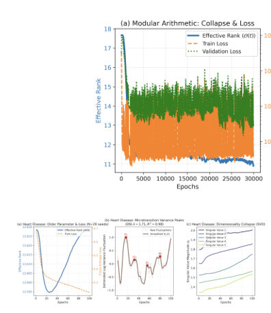
<figcaption class="paper-figure-caption"><b>Fig 2.</b> Figure 2: Universality and Empirical Generalization: (a) Transformer Grokking (Modular Arithmetic): Delayed generalization co-occurring with continuous dimensionality collapse and a log-linear DSI cascade. (b, c) UCI Heart Disease and FMNIST: DSI variance cascades in tabular regression (b) and image classification (c). Extended evaluations are in Appendix F.</figcaption>
</figure>
<figure class="paper-figure-card">
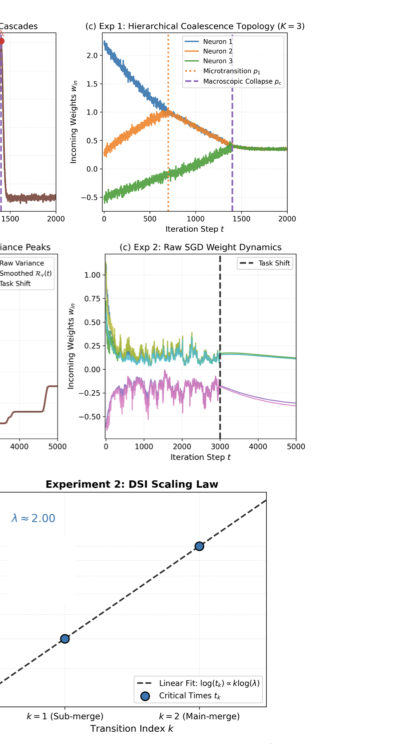
<figcaption class="paper-figure-caption"><b>Fig 3.</b> Figure 3: Experimental validation of symmetry-induced topological collapse and DSI scaling laws. Top Row (Experiment 1): Kinematic simulation of hierarchical coalescence (K = 3), displaying discrete jumps in the order parameter (a), divergence peaks in relative variance exactly at topological merge points (b), and forced continuous spline trajectories (c). Middle Row (Experiment 2): Empirical SGD dynamics (K = 6), showing macroscopic dimensionality collapse (a), distinct precursory variance peaks p1, p2 during the condensation phase, and a reactive fragmentation peak p3 following a task shift at t = 3000 (b), alongside the raw stochastic weight trajectories (c). Bottom Row: Log-linear...</figcaption>
</figure>
<figure class="paper-figure-card">
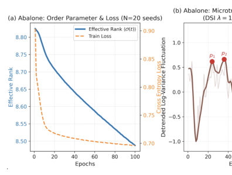
<figcaption class="paper-figure-caption"><b>Fig 4.</b> Figure 4: Abalone: The macroscopic continuous decay of effective rank (a) is underscored by a highly structured 6-peak DSI cascade yielding a strong log-linear fit of R2 = 0.97 with a fractional scaling factor λ = 1.28 (b). The collapse is driven by a dominant top singular value (c).</figcaption>
</figure>
<figure class="paper-figure-card">
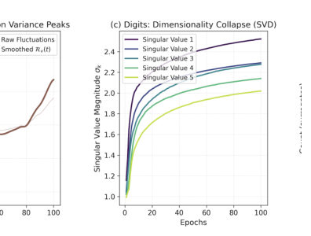
<figcaption class="paper-figure-caption"><b>Fig 5.</b> Figure 5: Digits: Variance fluctuations dynamically map the topological condensation of the network during early-stage SGD optimization.</figcaption>
</figure>
</div>

<p><strong>Summary.</strong> This work models the training dynamics of deep neural networks using the framework of stochastic gradient flow and percolation theory. It shows that structural symmetries force the network to undergo discrete, block-wise collapses, manifesting as variance spikes. These transitions exhibit Discrete Scale Invariance, providing a quantitative link between optimization dynamics and critical phenomena.</p>
<p><strong>Why it may be interesting.</strong> The connection between optimization dynamics (SGD) and concepts from statistical physics, such as percolation and phase transitions, provides a powerful analogy for understanding complex system organization, which is relevant to understanding emergent structure in quantum many-body systems.</p>
<details>
<summary>Detailed structure</summary>
<p><strong>Main problem.</strong> The paper investigates the dynamics of Stochastic Gradient Descent (SGD) in deep neural networks, aiming to understand how structural symmetries force the network to collapse toward simpler, invariant subnetworks.</p>
<p><strong>Main result.</strong> The structural transitions are modeled as percolation processes leading to Discrete Scale Invariance (DSI), characterized by variance spikes and a geometrically scaling cascade.</p>
<p><strong>Method.</strong> The authors model the optimization process using the Stochastic Gradient Flow (SGF) and analyze the structural evolution using percolation theory, supermartingale properties, and spectral entropy measures.</p>
<p><strong>Model / system.</strong> The system is deep neural networks trained via SGD (and extended to Adam/AdamW). The dynamics are analyzed by mapping the optimization path onto a percolation process defined on the network's architectural symmetries.</p>
<p><strong>Key observables.</strong> Variance spikes in a macroscopic order parameter, the structural order parameter $O(p)$, and the DSI scaling factor $\lambda$.</p>
<p><strong>Important parameters / regimes.</strong> Noise level ($\eta$), the number of merging components ($n$), and the conserved fractional spectral variance mass ($m$).</p>
<p><strong>Assumptions / limitations.</strong> The analysis assumes stochastic attractivity (drift dominance over diffusion) near invariant sets, and in later sections, it assumes mean-field percolation baselines or the conservation of spectral variance mass.</p>
<p><strong>Figures summary.</strong> Figures show experimental validation of the DSI scaling factor $\lambda \approx 2.00$ across controlled kinematic simulations ($K=3$) and empirical SGD runs ($K=6$), demonstrating a consistent scaling law.</p>
<p><strong>Paper structure.</strong> The argument progresses from defining invariant sets and establishing stochastic attractivity, to modeling the structural collapse via percolation theory, and finally generalizing the findings to derive and empirically test the continuous fractional scaling law $\lambda_{	ext{eff}} = nm\sigma$.</p>
</details>
<details>
<summary>Abstract</summary>
<p>We study the dynamics of Stochastic Gradient Descent (SGD), which is known to steer deep neural networks toward invariant sets that correspond to simpler subnetworks. How this steering unfolds over time remains poorly understood. We answer this by modeling the stochastic gradient flow (SGF) as a percolation process, in which architectural symmetries force subnetworks to merge in discrete simultaneous blocks rather than one at a time. These structural transitions register as variance spikes in a macroscopic order parameter, echoing physical phase transitions. We further show this trapping mechanism and its associated scaling cascade extend to Adam and AdamW under an explicit heavy-tailed noise model.</p>
</details>
<p><sub><a href="#top">↑ back to top</a></sub></p>

<p><a id="paper-2609.01752"></a></p>
<h3 id="math480math-bein-formalism-for-degenerate-states-in-the-parameter-space-of-quantum-geometry"><a href="http://arxiv.org/abs/2609.01752v1">$\mathcal{N}$-bein formalism for degenerate states in the parameter space of quantum geometry</a></h3>
<p><strong>Authors:</strong> Jorge Romero, Carlos A Velasquez, J David Vergara<br>
<strong>Type:</strong> theory · <strong>Category:</strong> other · <strong>PDF:</strong> <a href="https://arxiv.org/pdf/2609.01752v1">https://arxiv.org/pdf/2609.01752v1</a><br>
<strong>Analysis basis:</strong> full PDF text, analyzed in chunks
<strong>Topic relevance:</strong> <code>analog quantum simulation</code> <strong>1/5</strong> · <code>quantum measurements</code> <strong>1/5</strong></p>
<div class="figure-strip-hint">↔ Scroll figures horizontally</div>
<div class="paper-figures-scroll">
<figure class="paper-figure-card">
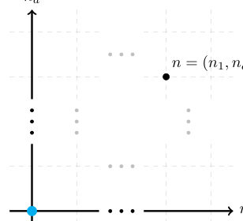
<figcaption class="paper-figure-caption"><b>Fig 1.</b> Figure 1: Diagram representing an arbitrary state n = (n1, nd) with energy En (black), and the ground state being at coordinate origin (blue).</figcaption>
</figure>
<figure class="paper-figure-card">
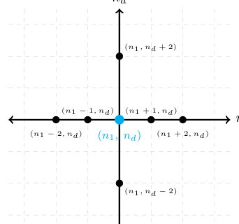
<figcaption class="paper-figure-caption"><b>Fig 2.</b> Figure 2: Diagram showing all the states (black dots) related through a parameter variation with the initial state n = (n1, nd) (blue dot). They represent all the non-zero N-beins.</figcaption>
</figure>
<figure class="paper-figure-card">
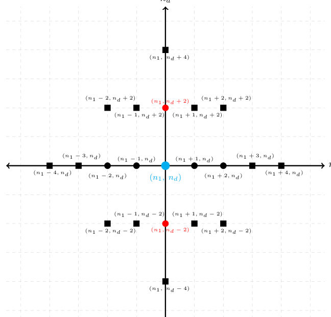
<figcaption class="paper-figure-caption"><b>Fig 3.</b> Figure 3: Starting at the blue circle in the state with n = (n1, nd), we represent all the energy levels related to it by two parameter variations (black squares and black circles). Additionally, the points with circles (either black or red) are also correlated through one parameter variation (N-beins). The red circles indicate states available through one parameter variation only.</figcaption>
</figure>
<figure class="paper-figure-card">
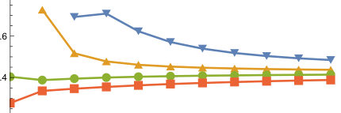
<figcaption class="paper-figure-caption"><b>Fig 4.</b> Figure 4: Plots of some non-zero invariants N (m,n) Ξ for M (m,n) ij MN, G(m,n) ij MN, and T (m,n) ij MN. (a) Graph of the invariants without degeneracy change, for nd = 0 and Ξ = M, G, T. (b) Graph of the invariants with degeneracy change, for nd = 0 and Ξ = M, G, T.</figcaption>
</figure>
<figure class="paper-figure-card">
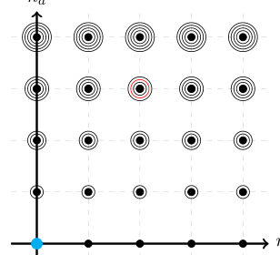
<figcaption class="paper-figure-caption"><b>Fig 5.</b> Figure 5: Diagram showing different states |nN⟩. Each dot represents an energy level, with the blue dot being the ground state. The rings surrounding each black dot account for a different value of N. As N increases, we move to the outer rings, with N = 1 being the black dot. The state |nN⟩with n = (2, 3) and N = 3 is highlighted in red.</figcaption>
</figure>
</div>

<p><strong>Summary.</strong> This paper develops an advanced geometric formalism using the N-bein to study the parameter space of quantum systems with degenerate spectra. It introduces a torsion tensor capturing non-commutativity and derives several gauge-invariant invariants. The framework is successfully applied to coupled harmonic oscillators, providing new tools to quantify correlations in degenerate quantum states.</p>
<p><strong>Why it may be interesting.</strong> This work provides a powerful, general geometric machinery for analyzing the parameter dependence of quantum systems, especially those with degeneracies, which is crucial for understanding topological phases and quantum control.</p>
<details>
<summary>Detailed structure</summary>
<p><strong>Main problem.</strong> The paper extends the N-bein formalism, originally for quantum parameter spaces, to analyze systems exhibiting degenerate spectra.</p>
<p><strong>Main result.</strong> The formalism successfully defines new gauge-invariant tensors and invariants that quantify state transitions and correlations in degenerate quantum systems, even when the standard QGT breaks down.</p>
<p><strong>Method.</strong> The authors employ concepts from Cartan geometry, introducing an N-bein as the 'square root' of the Quantum Geometric Tensor (QGT) and defining a torsion-like tensor via the covariant derivative.</p>
<p><strong>Model / system.</strong> The theoretical framework is applied to a concrete model of coupled harmonic oscillators immersed in an electric field, which naturally leads to a degenerate energy spectrum.</p>
<p><strong>Key observables.</strong> N-bein, Quantum Geometric Tensor (QGT), Torsion-like tensor, and several derived scalar invariants (e.g., $(N\Xi\Theta)$).</p>
<p><strong>Important parameters / regimes.</strong> The number of parameters ($\mathcal{N}$), the quantum numbers defining the energy subspaces ($n_1, n_d$), and the coupling strengths in the oscillator model.</p>
<p><strong>Assumptions / limitations.</strong> The analysis assumes the existence of a slowly varying parameter dependence and relies on extending the formalism from Abelian to non-Abelian matrix-valued descriptions.</p>
<p><strong>Figures summary.</strong> Figures illustrate the degeneracy structure of the Hilbert space and show how state changes occur via parameter variation, particularly highlighting jumps in quantum numbers.</p>
<p><strong>Paper structure.</strong> The paper builds from the initial N-bein definition to analyzing the two-state QGT for transitions, introduces the torsion tensor, develops a geometrical formulation using differential forms, and concludes with calculating and analyzing multiple gauge-invariant scalar observables for the coupled oscillator model.</p>
</details>
<details>
<summary>Abstract</summary>
<p>Recently, we introduced a geometric object analogous to an orthonormal frame in the Cartan formalism to study the parameter space of quantum systems; we called it $\mathcal{N}$-bein, with $\mathcal{N}$ being the number of parameters that characterize the quantum system. Acting as the ``square root'' of the quantum geometric tensor (QGT), the $\mathcal{N}$-bein allows us to define new tensors to improve our understanding of the structure beneath the parameter space of quantum mechanics. In this work, we extend this mathematical framework surrounding the $\mathcal{N}$-bein to analyze the parameter space of quantum systems with degenerate spectra. As in the non-degenerate case, we define a non-Abelian two-state QGT to identify possible transitions between degenerate states after two consecutive parameter variations. Additionally, using the Wilczek-Zee connection, we introduce a torsion-like tensor as the covariant derivative of the $\mathcal{N}$-bein. This torsion captures the noncommutativity of successive parameter variations and coincides with the antisymmetric part of the two-state QGT. We also present a geometrical formulation using differential forms and discuss the physical implications of the newly defined tensors. Furthermore, we construct several gauge-invariant observables from the $\mathcal{N}$-bein and its derivatives to highlight the utility of the new tensors. Finally, to illustrate the convenience and applications of this formalism, we apply the theoretical framework to a system of coupled harmonic oscillators immersed in an electric field. The coupling between the oscillators results in a degenerate system. Thus, using the new formalism, we found correlations among the quantum states quantified by the new invariants.</p>
</details>
<p><sub><a href="#top">↑ back to top</a></sub></p>

<p><a id="paper-2609.02043"></a></p>
<h3 id="a-generalized-harmonic-oscillator-problem-for-a-spin-12-fermion"><a href="http://arxiv.org/abs/2609.02043v1">A generalized harmonic oscillator problem for a spin-1/2 fermion</a></h3>
<p><strong>Authors:</strong> V. B. Mendrot, A. S. de Castro, P. Alberto<br>
<strong>Type:</strong> theory · <strong>Category:</strong> other · <strong>PDF:</strong> <a href="https://arxiv.org/pdf/2609.02043v1">https://arxiv.org/pdf/2609.02043v1</a><br>
<strong>Analysis basis:</strong> full PDF text, analyzed in chunks
<strong>Topic relevance:</strong> <code>Keldysh / 2PI / non-Gaussian methods</code> <strong>1/5</strong> · <code>quantum measurements</code> <strong>1/5</strong></p>
<div class="figure-strip-hint">↔ Scroll figures horizontally</div>
<div class="paper-figures-scroll">
<figure class="paper-figure-card">
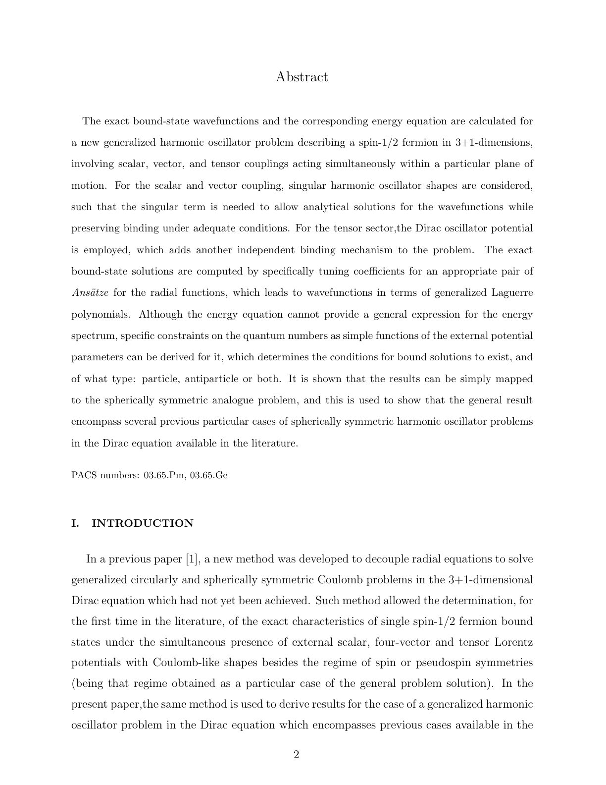
<figcaption class="paper-figure-caption"><b>Fig 1.</b> Low-resolution page preview, page 2</figcaption>
</figure>
<figure class="paper-figure-card">
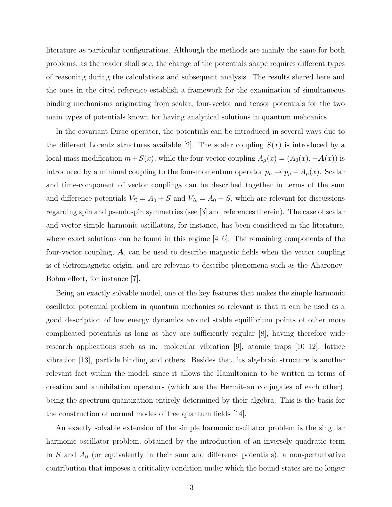
<figcaption class="paper-figure-caption"><b>Fig 2.</b> Low-resolution page preview, page 3</figcaption>
</figure>
<figure class="paper-figure-card">
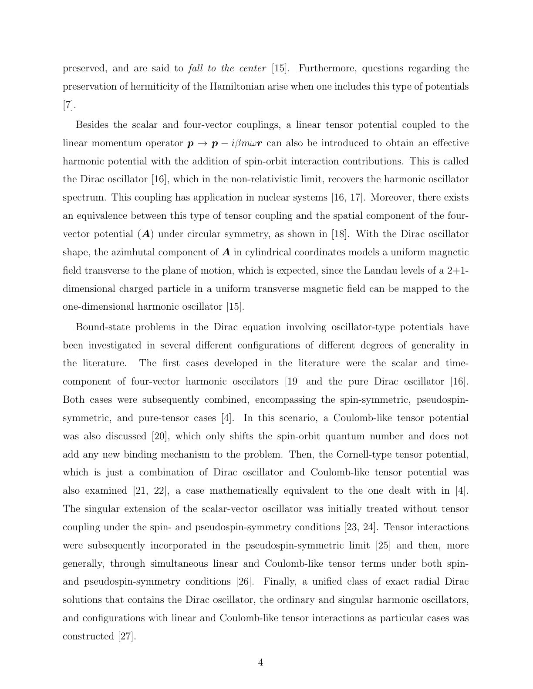
<figcaption class="paper-figure-caption"><b>Fig 3.</b> Low-resolution page preview, page 4</figcaption>
</figure>
<figure class="paper-figure-card">
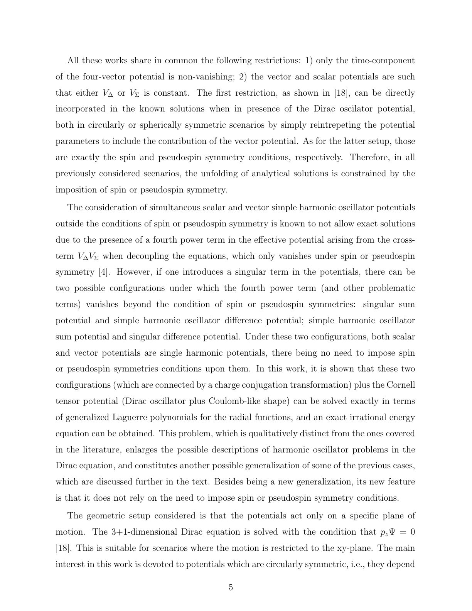
<figcaption class="paper-figure-caption"><b>Fig 4.</b> Low-resolution page preview, page 5</figcaption>
</figure>
<figure class="paper-figure-card">
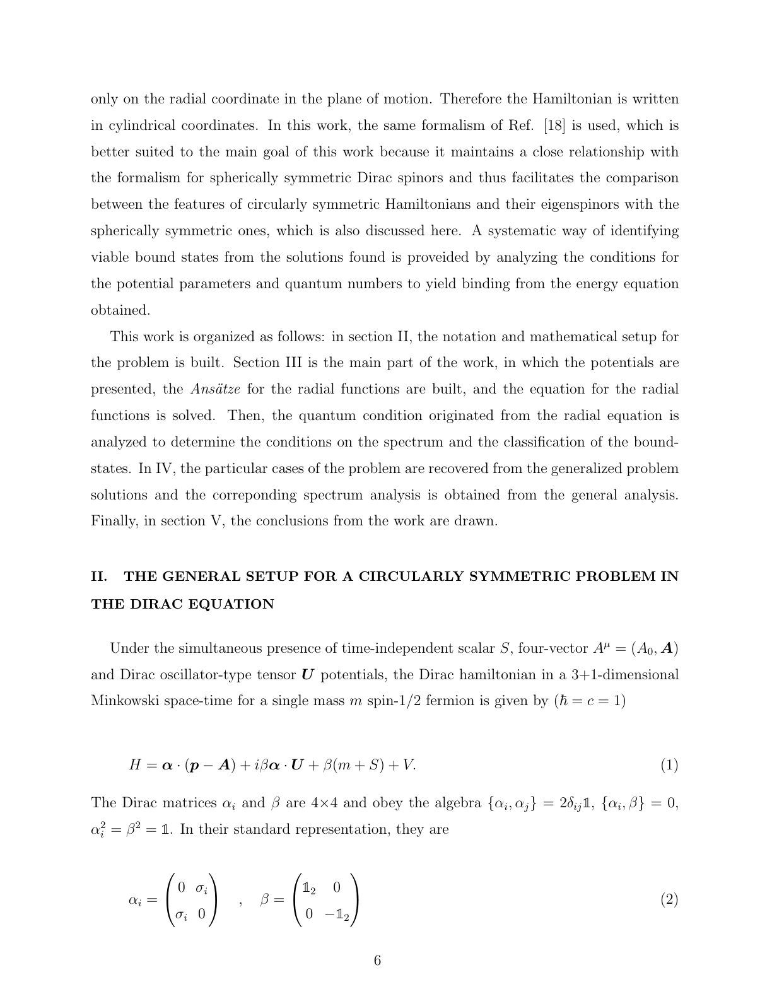
<figcaption class="paper-figure-caption"><b>Fig 5.</b> Low-resolution page preview, page 6</figcaption>
</figure>
</div>

<p><strong>Summary.</strong> This theoretical paper solves the bound-state problem for a spin-1/2 fermion in a generalized harmonic oscillator potential incorporating scalar, vector, and tensor couplings. The authors derive exact wavefunctions using specialized mathematical techniques and determine the conditions for bound energy levels by analyzing the roots of the resulting energy equation. This work provides a comprehensive framework that unifies several previously studied, but distinct, relativistic quantum oscillator problems.</p>
<p><strong>Why it may be interesting.</strong> While the core physics is relativistic quantum mechanics, the mathematical techniques used—analyzing the roots of complex transcendental equations derived from physical constraints—are highly relevant to finding exact solutions in complex quantum models.</p>
<details>
<summary>Detailed structure</summary>
<p><strong>Main problem.</strong> The paper calculates the exact bound-state wavefunctions and determines the conditions for the existence of bound solutions for a novel generalized harmonic oscillator problem involving a spin-1/2 fermion.</p>
<p><strong>Main result.</strong> The general solution encompasses several known spherically symmetric cases, and the existence of bound states is determined by analyzing constraints on quantum numbers derived from the energy equation.</p>
<p><strong>Method.</strong> The authors use advanced mathematical techniques, including solving coupled radial equations via specific Ansätze and employing real analysis on the resulting energy equation to determine the number of real roots corresponding to bound energies.</p>
<p><strong>Model / system.</strong> The system is a spin-1/2 fermion governed by a Dirac-like equation in 3+1 dimensions, subjected to simultaneous scalar, vector, and tensor couplings (including harmonic oscillator and Dirac oscillator potentials) acting in a plane of motion.</p>
<p><strong>Key observables.</strong> Bound-state energy eigenvalues ($\varepsilon$), and the classification of solutions as particle or antiparticle.</p>
<p><strong>Important parameters / regimes.</strong> Potential coupling constants ($\mu, \omega, a, b$), quantum numbers ($n, 	ilde{k}$), and the dimensionality of the motion.</p>
<p><strong>Assumptions / limitations.</strong> The potentials are assumed to be circularly symmetric, and the analysis relies on specific Ansätze for the radial functions and the mathematical rigor of analyzing the energy equation's roots.</p>
<p><strong>Figures summary.</strong> The notes reference several tables (II through VII) detailing the conditions on quantum numbers required to determine the number of real roots (0, 1, or 2) for the energy equation under various potential parameter regimes.</p>
<p><strong>Paper structure.</strong> The paper progresses from defining the generalized Hamiltonian and restricting motion to a plane, deriving coupled radial equations, solving specific solvable configurations (I and II) that violate symmetries, and finally using real analysis on the resulting energy equation to provide a complete classification of bound states.</p>
</details>
<details>
<summary>Abstract</summary>
<p>The exact bound-state wavefunctions and the corresponding energy equation are calculated for a new generalized harmonic oscillator problem describing a spin-1/2 fermion in 3+1-dimensions, involving scalar, vector, and tensor couplings acting simultaneously within a particular plane of motion. For the scalar and vector coupling, singular harmonic oscillator shapes are considered, such that the singular term is needed to allow analytical solutions for the wavefunctions while preserving binding under adequate conditions. For the tensor sector,the Dirac oscillator potential is employed, which adds another independent binding mechanism to the problem. The exact bound-state solutions are computed by specifically tuning coefficients for an appropriate pair of \textit{Ansätze} for the radial functions, which leads to wavefunctions in terms of generalized Laguerre polynomials. Although the energy equation cannot provide a general expression for the energy spectrum, specific constraints on the quantum numbers as simple functions of the external potential parameters can be derived for it, which determines the conditions for bound solutions to exist, and of what type: particle, antiparticle or both. It is shown that the results can be simply mapped to the spherically symmetric analogue problem, and this is used to show that the general result encompass several previous particular cases of spherically symmetric harmonic oscillator problems in the Dirac equation available in the literature.</p>
</details>
<p><sub><a href="#top">↑ back to top</a></sub></p>

<p><a id="paper-2609.02139"></a></p>
<h3 id="a-variational-quantum-eigensolver-based-cutting-plane-framework-for-semidefinite-programming-problems"><a href="http://arxiv.org/abs/2609.02139v1">A variational quantum eigensolver-based cutting plane framework for semidefinite programming problems</a></h3>
<p><strong>Authors:</strong> Gizem Ozbaygin, Burak Kocuk, Diego A. Moran R<br>
<strong>Type:</strong> theory · <strong>Category:</strong> quantum information and computing · <strong>PDF:</strong> <a href="https://arxiv.org/pdf/2609.02139v1">https://arxiv.org/pdf/2609.02139v1</a><br>
<strong>Analysis basis:</strong> full PDF text, analyzed in chunks
<strong>Topic relevance:</strong> <code>quantum measurements</code> <strong>1/5</strong></p>
<div class="figure-strip-hint">↔ Scroll figures horizontally</div>
<div class="paper-figures-scroll">
<figure class="paper-figure-card">
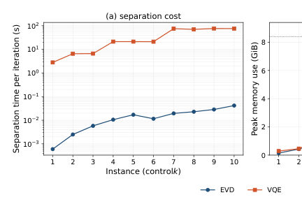
<figcaption class="paper-figure-caption"><b>Fig 1.</b> Fig. 1: Scaling of the two oracles across the instance family. (a) Separation time per cutting-plane iteration, on a logarithmic vertical axis; the plateaus correspond to the qubit count q = ⌈log2 n⌉of the larger block, which takes the values 4, 5, 6, 7 across the family. (b) Peak memory use, from the first repeat; the dotted line marks the effective limit at which runs were terminated. The vertical dashed line marks the change in iteration budget, 250 on control1–control5 and 100 thereafter; peak memory is driven by the accumulated cut pool and is therefore not comparable across it.</figcaption>
</figure>
<figure class="paper-figure-card">
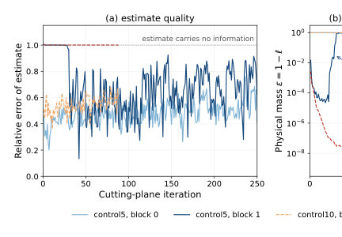
<figcaption class="paper-figure-caption"><b>Fig 2.</b> Fig. 2: Quality of the VQE eigenvalue estimates. (a) Relative error against cutting- plane iteration. (b) Physical mass ϵ = 1 −ℓ, on a logarithmic scale. On control10 the smaller block descends to a floor near 10−9 and does not recover; on control5 it floors four orders of magnitude higher and escapes at iteration 23. Curves are from the first repeat.</figcaption>
</figure>
</div>

<p><strong>Summary.</strong> This work proposes using a Variational Quantum Eigensolver (VQE) as a quantum oracle within a cutting-plane method to solve Semidefinite Programming (SDP) problems. While the quantum approach offers logarithmic qubit scaling, the study reveals that classical memory constraints and the need for full state tomography limit its practical advantage over classical solvers. It serves as a key case study for hybrid quantum-classical optimization algorithms.</p>
<p><strong>Why it may be interesting.</strong> It provides a concrete, albeit limited, blueprint for integrating quantum computation (VQE) into a well-established classical optimization framework (cutting planes), which is highly relevant for near-term quantum algorithm development.</p>
<details>
<summary>Detailed structure</summary>
<p><strong>Main problem.</strong> The paper addresses the computational bottleneck in solving Semidefinite Programming (SDP) problems, which are crucial in optimization theory.</p>
<p><strong>Main result.</strong> The authors propose a VQE-based cutting-plane framework, showing that while the VQE oracle generates valid cuts, the overall advantage over classical methods is limited by classical memory bottlenecks and the need for state tomography.</p>
<p><strong>Method.</strong> They integrate a Variational Quantum Eigensolver (VQE) into a polyhedral outer-approximation cutting-plane algorithm to replace the computationally expensive linear-algebraic step of checking positive semidefiniteness.</p>
<p><strong>Model / system.</strong> The model is the abstract mathematical problem of solving an SDP, $ ext{SDP (1.1)}$, constrained by the positive semidefinite cone ($   ext{S}_n^+$). The quantum component uses VQE to estimate the minimum eigenvalue of the candidate matrix.</p>
<p><strong>Key observables.</strong> The minimum eigenvalue ($\lambda_{\min}(X^*)$) of the candidate matrix $X^*$, and the resulting fraction of the initial optimality gap closed.</p>
<p><strong>Important parameters / regimes.</strong> The qubit requirement scales logarithmically ($\lceil\log_2 N
ceil$) with the matrix dimension $N$, contrasting with the classical $O(N^2)$ storage.</p>
<p><strong>Assumptions / limitations.</strong> The primary assumptions involve the feasibility of realizing the VQE oracle and the use of a polyhedral outer-approximation scheme, which does not guarantee finite convergence.</p>
<p><strong>Figures summary.</strong> Not specified.</p>
<p><strong>Paper structure.</strong> The paper details the construction of the end-to-end cutting-plane loop, where the separation oracle is realized by the VQE, followed by comparative analysis against exact methods and discussion of practical hardware limitations.</p>
</details>
<details>
<summary>Abstract</summary>
<p>Semidefinite programming plays a key role in optimization, with broad impact across control theory, machine learning, and combinatorial optimization. Although semidefinite programs are polynomially solvable, several commonly used algorithms rest on a linear-algebraic step whose running time grows cubically with the matrix dimension and which requires the matrix itself to be held in memory, at quadratic cost. In this study, we propose replacing it with a variational quantum eigensolver, whose qubit requirement is logarithmic in the matrix dimension, and present the first end-to-end implementation of such an approach within a cutting-plane framework, together with an operator-derived ansatz whose entanglement structure is read directly from the Pauli support of the candidate matrix. Evaluated on the control family of SDPLIB against an identical scheme driven by an exact eigendecomposition, the variational oracle produces valid cuts throughout, closing 32 to 82% of the initial optimality gap against a near-constant 75 to 82% for the exact oracle. Implementing and measuring the method end to end surfaces several effects not visible from theoretical analyses alone: where memory is actually consumed, how the padding required to fit a matrix onto a quantum register can mislead the variational optimizer, and why the candidate matrices prove dense in the Pauli basis, reducing the operator-derived ansatz to full entanglement. We report these findings and discuss their implications for near-term hybrid quantum-classical approaches.</p>
</details>
<p><sub><a href="#top">↑ back to top</a></sub></p>

<p><a id="paper-2609.01993"></a></p>
<h3 id="entanglement-anti-flatness-and-nonlocal-nonstabilizerness-a-unified-perspective-from-entanglement-spectrum"><a href="http://arxiv.org/abs/2609.01993v1">Entanglement, anti-flatness, and nonlocal nonstabilizerness: a unified perspective from entanglement spectrum</a></h3>
<p><strong>Authors:</strong> Lei-Yi-Nan Liu, Jian Cui<br>
<strong>Type:</strong> theory · <strong>Category:</strong> statistical mechanics · <strong>PDF:</strong> <a href="https://arxiv.org/pdf/2609.01993v1">https://arxiv.org/pdf/2609.01993v1</a><br>
<strong>Analysis basis:</strong> full PDF text, analyzed in chunks
<strong>Topic relevance:</strong> <code>non-equilibrium universality</code> <strong>1/5</strong></p>
<div class="figure-strip-hint">↔ Scroll figures horizontally</div>
<div class="paper-figures-scroll">
<figure class="paper-figure-card">
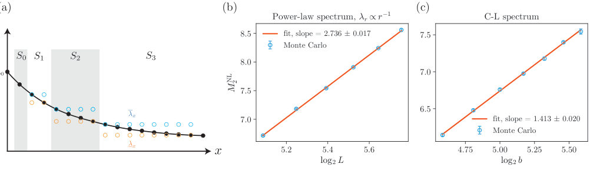
<figcaption class="paper-figure-caption"><b>Fig 1.</b> FIG. 1. (a) Schematic illustration of the shell-based sandwich construction. Within each dyadic shell Sj, the largest and smallest eigenvalues are used to construct upper and lower shell-flat spectra, respectively, which bound the original ordered ES from above and below. (b) Monte Carlo results for the algebraically decaying spectrum at p = 1, with L = log2 N. The fitted slope is 2.736 ± 0.017, approaching the asymptotic value 3. (c) Monte Carlo results for the C-L spectrum, with fitted slope 1.413 ± 0.020, approaching the predicted value 3/2.</figcaption>
</figure>
</div>

<p><strong>Summary.</strong> This theoretical paper unifies the study of entanglement and nonlocal nonstabilizerness by developing a spectral framework based on the entanglement spectrum. It derives universal bounds for the nonlocal stabilizer Rényi entropy using generalized anti-flatness. The framework successfully predicts distinct scaling laws for various spectral types, offering a general tool for analyzing quantum correlations in many-body systems.</p>
<p><strong>Why it may be interesting.</strong> This work provides powerful, general spectral tools to characterize complex non-local correlations (nonstabilizerness) in critical quantum systems, linking it rigorously to measurable quantities like entanglement entropy.</p>
<details>
<summary>Detailed structure</summary>
<p><strong>Main problem.</strong> The paper aims to develop a unified spectral framework to understand the relationship between entanglement, anti-flatness, and nonlocal nonstabilizerness in quantum many-body systems.</p>
<p><strong>Main result.</strong> The nonlocal SRE is shown to be controlled by complementary spectral structures derived from the entanglement spectrum, yielding universal scaling laws, such as double-logarithmic growth at 1D conformal critical points.</p>
<p><strong>Method.</strong> The authors derive universal upper and lower bounds on the nonlocal stabilizer Rényi entropy using generalized anti-flatness and introduce a 'dyadic-shell sandwich construction' to bound the ordered entanglement spectrum.</p>
<p><strong>Model / system.</strong> The analysis focuses on bipartite pure states in quantum many-body systems, specifically examining spectra that decay exponentially or algebraically, including the Calabrese--Lefevre spectrum relevant to 1D critical points.</p>
<p><strong>Key observables.</strong> Nonlocal $\alpha$-Rényi Entropy ($  ext{M}<em _alpha="\alpha">{    ext{NL}}^{\alpha}$), $\alpha$-Rényi Entanglement Entropy ($  ext{S}</em>$)}$), and Generalized Anti-flatness ($\mathcal{A}_{\alpha</p>
<p><strong>Important parameters / regimes.</strong> The decay exponent $p$ in algebraic spectra, the entanglement parameter $\alpha$, and the system size $N$ or length $L$.</p>
<p><strong>Assumptions / limitations.</strong> The analysis relies on the properties of the entanglement spectrum and the applicability of spectral bounding techniques like the dyadic-shell sandwich construction.</p>
<p><strong>Figures summary.</strong> The notes mention schematic illustrations of the sandwich construction and results comparing the asymptotic scaling of $S_2$, $A_2$, and $M_{NL}^2$ for different decay regimes ($p>1, p=1, p \in(0, 1)$).</p>
<p><strong>Paper structure.</strong> The paper develops the spectral framework by introducing bounds relating $ ext{M}<em _alpha="\alpha">{    ext{NL}}^{\alpha}$ to $ ext{S}</em>$ and $\mathcal{A}_{\alpha}$. It then applies this framework to specific spectral types (exponential, algebraic, C-L) to derive concrete scaling laws and demonstrate the general applicability of the spectral tools.</p>
</details>
<details>
<summary>Abstract</summary>
<p>Entanglement and nonstabilizerness capture distinct aspects of quantum complexity, yet their relation through the entanglement spectrum remains only partially understood. Here we develop a unified spectral framework for bipartite nonlocal nonstabilizerness. We introduce a generalized anti-flatness and derive universal upper and lower bounds on the nonlocal stabilizer Rényi entropy (SRE) in terms of Rényi entanglement entropy and spectral non-uniformity. We apply these bounds to exponentially and algebraically decaying spectra, revealing distinct relations between entanglement and nonlocal nonstabilizerness. For the marginal algebraic spectrum and the Calabrese--Lefevre spectrum, we further introduce a dyadic-shell sandwich construction that bounds the ordered entanglement spectrum by upper and lower shell-flat spectra and determines the asymptotic nonlocal SRE scaling. At one-dimensional conformal critical points, this yields a universal hierarchy of double-logarithmic scaling laws. Our spectral bounds and dyadic-shell sandwich construction provide general tools for analyzing nonlocal SRE, offering a flexible framework that can be applied to a wide range of entanglement spectra in quantum many-body systems.</p>
</details>
<p><sub><a href="#top">↑ back to top</a></sub></p>

<p><a id="paper-2609.02114"></a></p>
<h3 id="euin2sb2-epitaxially-stabilized-axion-insulator-candidate-with-strong-spin-orbit-coupling"><a href="http://arxiv.org/abs/2609.02114v1">EuIn2Sb2: epitaxially stabilized axion insulator candidate with strong spin-orbit coupling</a></h3>
<p><strong>Authors:</strong> Hsiang Lee, Shinichi Nishihaya, Markus Kriener, Ayano Nakamura, Tadashi Yoneda, Yuki Deguchi, Makuro Goto, Masaki Uchida<br>
<strong>Type:</strong> experiment · <strong>Category:</strong> strongly correlated electrons · <strong>PDF:</strong> <a href="https://arxiv.org/pdf/2609.02114v1">https://arxiv.org/pdf/2609.02114v1</a><br>
<strong>Analysis basis:</strong> full PDF text, analyzed in chunks
<strong>Topic relevance:</strong> <code>analog quantum simulation</code> <strong>1/5</strong></p>
<div class="figure-strip-hint">↔ Scroll figures horizontally</div>
<div class="paper-figures-scroll">
<figure class="paper-figure-card">
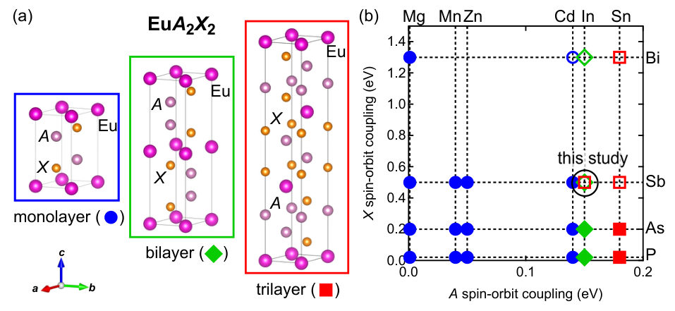
<figcaption class="paper-figure-caption"><b>Fig 1.</b> FIG. 1. EuA2X2 compounds with Eu triangular lattice. (a) Three different crystal structures of</figcaption>
</figure>
<figure class="paper-figure-card">
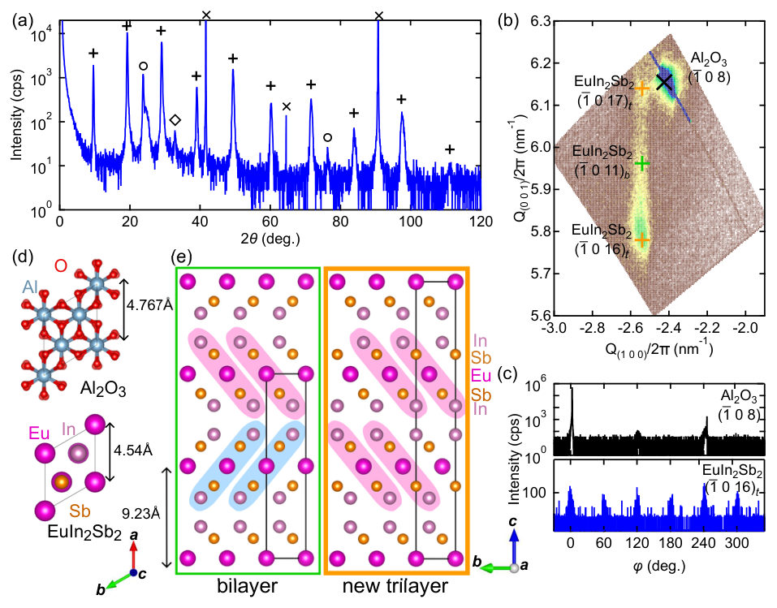
<figcaption class="paper-figure-caption"><b>Fig 2.</b> FIG. 2. XRD characterization of EuIn2Sb2 film. (a) XRD θ-2θ scan of a EuIn2Sb2 thin film grown</figcaption>
</figure>
<figure class="paper-figure-card">
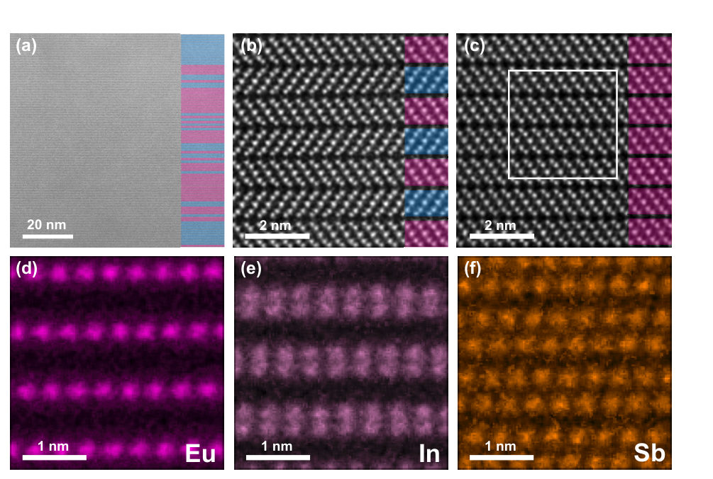
<figcaption class="paper-figure-caption"><b>Fig 3.</b> FIG. 3. Atomically resolved cross-sectional structure images. (a) Wide-area TEM image, and</figcaption>
</figure>
</div>

<p><strong>Summary.</strong> This work reports the successful epitaxial synthesis of EuIn2Sb2, a material predicted to be a magnetic topological insulator. By characterizing its novel trilayer crystal structure and measuring its magnetic and transport properties, the authors establish it as a promising new platform for investigating axion and higher-order topological insulating phases.</p>
<p><strong>Why it may be interesting.</strong> The combination of magnetic ordering (antiferromagnetism) and strong spin-orbit coupling in a crystalline solid is central to realizing topological phases, which is a major focus in modern condensed matter theory.</p>
<details>
<summary>Detailed structure</summary>
<p><strong>Main problem.</strong> To experimentally realize and characterize EuIn2Sb2, a predicted axion insulator and higher-order topological insulator candidate within the EuA2X2 family.</p>
<p><strong>Main result.</strong> The authors successfully stabilized EuIn2Sb2 films via MBE, revealing a novel trilayer structure with an In-on-In stacking configuration, which makes it an ideal platform for studying magnetic topological phases.</p>
<p><strong>Method.</strong> The study employed epitaxial growth using Molecular Beam Epitaxy (MBE), followed by structural characterization using XRD/TEM and magnetic/transport measurements using SQUID and four-probe methods.</p>
<p><strong>Model / system.</strong> The physical system is the EuIn2Sb2 thin film, belonging to the EuA2X2 family of magnetic topological insulators. The investigation focuses on how strong spin-orbit coupling and the specific crystal structure stabilize exotic topological states.</p>
<p><strong>Key observables.</strong> Longitudinal resistivity (rho_xx) showing a kink at TN=10.5K; magnetic susceptibility (chi); and structural confirmation of the trilayer phase via XRD RSM and TEM.</p>
<p><strong>Important parameters / regimes.</strong> The magnetic ordering temperature (TN=10.5K) and the strong spin-orbit coupling regime are critical parameters defining the topological nature of the material.</p>
<p><strong>Assumptions / limitations.</strong> The analysis assumes that the observed trilayer structure and the presence of in-plane antiferromagnetic ordering are sufficient to establish the material as a candidate for axion/HOTI phases.</p>
<p><strong>Figures summary.</strong> Figures illustrate the crystal structures of EuA2X2 compounds, the successful growth and characterization of the trilayer EuIn2Sb2 film (using XRD/TEM), and the magnetic phase diagram showing temperature and field dependence of resistivity and magnetization.</p>
<p><strong>Paper structure.</strong> The paper proceeds by establishing the theoretical context of EuA2X2 topological insulators, detailing the MBE growth process to stabilize the novel trilayer EuIn2Sb2 structure, and finally characterizing its magnetic and transport properties to confirm its suitability for topological phase exploration.</p>
</details>
<details>
<summary>Abstract</summary>
<p>Eu triangular lattice layer compounds described by the general formula EuA2X2 have attracted growing attention due to a wide range of layered crystal structures and corresponding magnetic topological phases, arising from the coexistence of large Eu magnetic moments and energetically inverted A and X bands. Among the EuA2X2 family, EuIn2Sb2 has been predicted to host robust axion insulator and higher-order topological insulator states by stronger spin-orbit coupling but has not been experimentally realized, including the structural identification. Here we report the epitaxial stabilization of EuIn2Sb2 by adopting the molecular beam epitaxy technique. Structural characterization reveals that EuIn2Sb2 films are based on a unique In-on-In stacking, forming a new trilayer structure distinct from previously predicted structures in the EuA2X2 family. In addition to the in-plane antiferromagnetic ordering at TN=10.5K, the stronger spin-orbit coupling and enhanced In-In hybridization in EuIn2Sb2 make it an ideal candidate of axion insulator and higher-order topological insulator phases. These results establish EuIn2Sb2 as a new member of the EuA2X2 family and offer an advanced platform for exploring these magnetic topological phases.</p>
</details>
<p><sub><a href="#top">↑ back to top</a></sub></p>

<p><a id="paper-2609.02099"></a></p>
<h3 id="laser-induced-phase-shift-of-swift-electrons"><a href="http://arxiv.org/abs/2609.02099v1">Laser-induced phase shift of swift electrons</a></h3>
<p><strong>Authors:</strong> Christian Dwyer, David M. Paganin<br>
<strong>Type:</strong> theory · <strong>Category:</strong> other · <strong>PDF:</strong> <a href="https://arxiv.org/pdf/2609.02099v1">https://arxiv.org/pdf/2609.02099v1</a><br>
<strong>Analysis basis:</strong> full PDF text, analyzed in chunks
<strong>Topic relevance:</strong> <code>Keldysh / 2PI / non-Gaussian methods</code> <strong>1/5</strong></p>
<div class="figure-strip-hint">↔ Scroll figures horizontally</div>
<div class="paper-figures-scroll">
<figure class="paper-figure-card">

<figcaption class="paper-figure-caption"><b>Fig 1.</b> FIG. 1. Feynman diagrams for S(2) fi .</figcaption>
</figure>
<figure class="paper-figure-card">

<figcaption class="paper-figure-caption"><b>Fig 2.</b> FIG. 2. Graphical explanation of different boundary conditions for the radiation field A. The vertical lines</figcaption>
</figure>
</div>

<p><strong>Summary.</strong> This theoretical work calculates the phase shift imparted to fast electrons by a laser field using three independent methods: Dirac theory, Volkov solutions, and the Hamilton-Jacobi equation. The key finding is the agreement across all formalisms, yielding a Lorentz-invariant result that is crucial for applications like laser phase plates in TEMs.</p>
<p><strong>Why it may be interesting.</strong> The rigorous comparison between quantum field theory methods (Dirac/Klein-Gordon) and classical mechanics (Hamilton-Jacobi) to derive a single, Lorentz-invariant result for an electron-laser interaction is highly relevant for understanding strong-field quantum optics.</p>
<details>
<summary>Detailed structure</summary>
<p><strong>Main problem.</strong> The paper revisits the calculation of the phase shift experienced by swift electrons as they pass through the electromagnetic field of a high-intensity laser.</p>
<p><strong>Main result.</strong> The calculated phase shift is found to be independent of the relative orientation of the electron and laser beams, and the results from quantum (Dirac, Klein-Gordon) and classical (Hamilton-Jacobi) theories show agreement.</p>
<p><strong>Method.</strong> The authors employ three distinct theoretical frameworks—perturbation theory on the Dirac equation, the Volkov solution to the Klein-Gordon equation, and the relativistic Hamilton-Jacobi equation—to calculate the phase shift.</p>
<p><strong>Model / system.</strong> The system involves a relativistic electron interacting with a classical, time-varying electromagnetic field generated by a laser. The analysis is framed using the electron's 4-potential A and its resulting phase shift $\phi$.</p>
<p><strong>Key observables.</strong> Laser-induced phase shift ($\phi$), which is the primary observable, and the electron's trajectory.</p>
<p><strong>Important parameters / regimes.</strong> Electron energy ($E$), laser frequency ($\omega$), interaction time ($\Delta t$), and the degree of relativistic motion ($\gamma$).</p>
<p><strong>Assumptions / limitations.</strong> The derivation often assumes that the scattering process leaves the electron and photon states unchanged, which is justified by considering the high photon density limit analogous to stimulated emission.</p>
<p><strong>Figures summary.</strong> Figure 2 graphically illustrates the boundary conditions for the radiation field A, comparing confinement in time versus a $   au$-parameterization, and showing the required correction factor.</p>
<p><strong>Paper structure.</strong> The paper systematically compares results derived from three methods: perturbation theory on the Dirac equation, using Volkov solutions to the Klein-Gordon equation, and finally, employing the relativistic Hamilton-Jacobi equation to establish consistency and analyze Lorentz invariance.</p>
</details>
<details>
<summary>Abstract</summary>
<p>We revisit the calculation of the phase shift experienced by swift electrons on passing through the electromagnetic field of a laser. Such phase shifts are now utilized in the form of `laser phase plates' in transmission electron microscopes (TEMs), for example. We calculate the phase shift using three different methods, namely, perturbation theory applied to the Dirac equation, the Volkov solution to the Klein-Gordon equation, and the relativistic Hamilton-Jacobi equation. We find that all three methods are in agreement, and that the calculated phase shift is independent of the relative orientation of the electron and laser beams. The agreement between the quantum and classical theories is explained. Our Lorentz invariant result for the phase shift differs from certain results published in the literature.</p>
</details>
<p><sub><a href="#top">↑ back to top</a></sub></p>

<p><a id="paper-2609.01966"></a></p>
<h3 id="localizing-quantum-information"><a href="http://arxiv.org/abs/2609.01966v1">Localizing quantum information</a></h3>
<p><strong>Authors:</strong> Fahimeh Bayeh, Andre Kornell<br>
<strong>Type:</strong> theory · <strong>Category:</strong> quantum information and computing · <strong>PDF:</strong> <a href="https://arxiv.org/pdf/2609.01966v1">https://arxiv.org/pdf/2609.01966v1</a><br>
<strong>Analysis basis:</strong> full PDF text, analyzed in chunks
<strong>Topic relevance:</strong> <code>quantum measurements</code> <strong>1/5</strong></p>
<div class="figure-strip-hint">↔ Scroll figures horizontally</div>
<div class="paper-figures-scroll">
<figure class="paper-figure-card">

<figcaption class="paper-figure-caption"><b>Fig 1.</b> Low-resolution page preview, page 2</figcaption>
</figure>
<figure class="paper-figure-card">

<figcaption class="paper-figure-caption"><b>Fig 2.</b> Low-resolution page preview, page 3</figcaption>
</figure>
<figure class="paper-figure-card">

<figcaption class="paper-figure-caption"><b>Fig 3.</b> Low-resolution page preview, page 4</figcaption>
</figure>
<figure class="paper-figure-card">

<figcaption class="paper-figure-caption"><b>Fig 4.</b> Low-resolution page preview, page 5</figcaption>
</figure>
<figure class="paper-figure-card">

<figcaption class="paper-figure-caption"><b>Fig 5.</b> Low-resolution page preview, page 6</figcaption>
</figure>
</div>

<p><strong>Summary.</strong> This paper develops a novel quantum entropy, the adjusted von Neumann entropy ($   ilde{S}$), designed to correctly quantify 'localizable information' in quantum systems, unlike the standard von Neumann entropy. The authors prove that $   ilde{S}$ is the unique entropy satisfying key physical constraints, and they use it to provide a definitive characterization of entangled Bell states. This advances the foundational understanding of information measures in quantum theory.</p>
<p><strong>Why it may be interesting.</strong> This work provides a rigorous, information-theoretic tool ($ ilde{S}$) to distinguish physically meaningful entropy measures from mathematically defined ones, which is crucial for understanding entanglement and information flow in quantum systems.</p>
<details>
<summary>Detailed structure</summary>
<p><strong>Main problem.</strong> The paper seeks to define a quantum entropy measure that accurately quantifies 'localizable information' in quantum systems, a property that standard von Neumann entropy lacks.</p>
<p><strong>Main result.</strong> The authors prove that an adjusted von Neumann entropy, $  ilde{S}$, is the minimum quantum entropy satisfying the localizability monotonicity condition and uniquely characterizes Bell states.</p>
<p><strong>Method.</strong> The analysis involves comparing the axioms of classical Shannon entropy with quantum entropy measures using finite-dimensional $C^*$-algebras and establishing necessary and sufficient conditions via algebraic constraints.</p>
<p><strong>Model / system.</strong> The study models finite quantum systems using finite-dimensional $C^*$-algebras, $A$, which can possess superselection sectors. The focus is on bipartite systems described by states $
ho \in A \otimes B$.</p>
<p><strong>Key observables.</strong> Adjusted von Neumann entropy ($    ilde{S}$), Shannon entropy, and the characterization of Bell states.</p>
<p><strong>Important parameters / regimes.</strong> The dimension of the system ($n$), which dictates the additive constant in the adjusted entropy ($\log n$).</p>
<p><strong>Assumptions / limitations.</strong> The analysis is restricted to finite-dimensional $C^*$-algebras, and the definition of $   ilde{S}$ requires an additive correction to standard von Neumann entropy to achieve localizability.</p>
<p><strong>Paper structure.</strong> The paper progresses by first establishing the failure of standard von Neumann entropy to quantify localizable information, then proposing and proving the properties of the adjusted entropy $    ilde{S}$ based on monotonicity, and finally using $ ilde{S}$ to provide a structural characterization of Bell states.</p>
</details>
<details>
<summary>Abstract</summary>
<p>The idea that information can be localized is pervasive in physics. In thermodynamics, entropy flows from one reservoir to another, and in quantum gravity, the entropy content of some spatial regions is bounded. In quantum information theory, information is transmitted from one place to another, and entanglement can provide an advantage when there are constraints on such transmission.   Shannon entropy quantifies localizable information in the sense that marginalization defines an outer measure on the set of parts of a classical multipartite system. In contrast, von Neumann entropy does not quantify localizable information in this sense. However, a variant of von Neumann entropy, which originates in noncommutative geometry, does.   We prove that this adjusted von Neumann entropy is the minimum quantum entropy that quantifies localizable information. We also prove that this is the unique quantum entropy that characterizes Bell states in terms of redundant information, directly generalizing the classical case. We work with finite-dimensional $C^*$-algebras throughout, modeling finite quantum systems that may have superselection sectors.</p>
</details>
<p><sub><a href="#top">↑ back to top</a></sub></p>

<p><a id="paper-2609.02824"></a></p>
<h3 id="low-temperature-transport-in-li-ion-battery-ecemcfec-electrolytes-molecular-dynamics-and-machine-learning-modeling"><a href="http://arxiv.org/abs/2609.02824v1">Low-Temperature Transport in Li-Ion Battery EC/EMC/FEC Electrolytes: Molecular Dynamics and Machine-Learning Modeling</a></h3>
<p><strong>Authors:</strong> İpek Yenda Çınar, Oguzhan Orhan, M. Oluş Özbek, Şener Özönder<br>
<strong>Type:</strong> theory · <strong>Category:</strong> disordered systems and neural networks · <strong>PDF:</strong> <a href="https://arxiv.org/pdf/2609.02824v1">https://arxiv.org/pdf/2609.02824v1</a><br>
<strong>Analysis basis:</strong> full PDF text, analyzed in chunks
<strong>Topic relevance:</strong> <code>methods for driven-dissipative</code> <strong>1/5</strong></p>
<div class="figure-strip-hint">↔ Scroll figures horizontally</div>
<div class="paper-figures-scroll">
<figure class="paper-figure-card">

<figcaption class="paper-figure-caption"><b>Fig 1.</b> Figure 1: Representative initial simulation configuration generated with PACKMOL for a 1 M LiPF6 EC:EMC electrolyte containing 10 mol% FEC, visualized using VMD.</figcaption>
</figure>
<figure class="paper-figure-card">

<figcaption class="paper-figure-caption"><b>Fig 2.</b> Figure 2: Temperature dependence of the Li+ diffusion coefficient in 1 M LiPF6 electrolytes: (a) the three base solvents EC, EMC and EC/EMC (3:7, w/w); (b) EC with 0, 1, 2, 5 and 10 mol% FEC; (c) EC/EMC (3:7, w/w) with 0, 1, 2, 5 and 10 mol% FEC. Error bars denote one standard deviation of the windowed Einstein fit.</figcaption>
</figure>
<figure class="paper-figure-card">

<figcaption class="paper-figure-caption"><b>Fig 3.</b> Figure 3: (a) Arrhenius plots of the Li+ diffusion coefficient for all eleven electrolytes with linear fits. (b) Meyer-Neldel compensation plot of the pre-exponential factor D0 versus activation energy Ea; the line is a linear fit to ln D0 versus Ea (R2 = 0.997), corresponding to a compensation temperature TMN ≈358 K.</figcaption>
</figure>
<figure class="paper-figure-card">

<figcaption class="paper-figure-caption"><b>Fig 4.</b> Figure 4: Temperature dependence of the solvent self-diffusion coefficients in the simulated 1 M LiPF6 electrolytes: (a) EC, (b) EMC and (c) FEC. Each species is shown for every composition in which it is present; colors follow the electrolyte color coding used throughout. Error bars denote one standard deviation of the windowed Einstein fit.</figcaption>
</figure>
<figure class="paper-figure-card">

<figcaption class="paper-figure-caption"><b>Fig 5.</b> Figure 5: (a) NE and (b) GK ionic conductivities for 1 M LiPF6 in EC, EMC and EC/EMC (3:7, w/w), plotted against inverse temperature. Error bars denote one standard deviation; GK values and uncertainties are obtained with the STACIE spectral estimator.</figcaption>
</figure>
</div>

<p><strong>Summary.</strong> This work uses Molecular Dynamics simulations combined with Machine Learning to study how lithium-ion conductivity in battery electrolytes degrades at low temperatures. The researchers found that the transport penalty is highly dependent on the solvent blend and the concentration of FEC additives. By training ML models, they created a fast tool to predict these complex transport properties across different operating conditions.</p>
<p><strong>Why it may be interesting.</strong> While focused on electrochemistry, the application of ML surrogates to model complex, multi-parameter physical phenomena (like conductivity vs. T and composition) falls under the umbrella of ML-physics, which shares methodological overlap with disordered systems analysis.</p>
<details>
<summary>Detailed structure</summary>
<p><strong>Main problem.</strong> The paper investigates the limitations imposed by low-temperature operation on lithium-ion transport in battery electrolytes, focusing on the coupled effects of solvent composition and fluorinated additives.</p>
<p><strong>Main result.</strong> Cooling causes a pronounced transport penalty, particularly in EMC-containing electrolytes, and the study quantifies the temperature and composition dependence using ML surrogates.</p>
<p><strong>Method.</strong> The research combines classical Molecular Dynamics (MD) simulations with Machine Learning (ML) techniques, specifically Gaussian-process surrogates, to model transport properties.</p>
<p><strong>Model / system.</strong> The system is a 1 M LiPF6 electrolyte containing mixtures of ethylene carbonate (EC), ethyl methyl carbonate (EMC), and fluoroethylene carbonate (FEC), simulated across temperatures from 298 K down to 233 K.</p>
<p><strong>Key observables.</strong> Li+ self-diffusion coefficients, Nernst-Einstein (NE) and Green-Kubo (GK) conductivities, and local coordination analyzed via RDFs.</p>
<p><strong>Important parameters / regimes.</strong> Temperature range (233 K to 298 K), FEC concentration (0-10 mol%), and solvent ratios (EC:EMC).</p>
<p><strong>Assumptions / limitations.</strong> The study assumes that temperature and host-solvent composition are the dominant factors governing bulk transport response, and it notes that direct Li+-FEC coordination is not quantified.</p>
<p><strong>Figures summary.</strong> Figure 1 shows a representative initial simulation configuration for a specific electrolyte mixture, and other figures/tables detail the temperature dependence of density and transport parameters.</p>
<p><strong>Paper structure.</strong> The paper systematically simulates the electrolyte across varying compositions and temperatures using MD, calculates transport metrics (D, $\sigma_{NE}$, $\sigma_{GK}$), and then employs ML surrogates to build predictive models for these properties.</p>
</details>
<details>
<summary>Abstract</summary>
<p>Low-temperature operation imposes severe limitations on lithium-ion transport in battery electrolytes, yet the coupled effects of solvent composition and fluorinated additives in the cold-temperature regime remain insufficiently resolved. Here, we combine classical molecular dynamics (MD) and machine learning (ML) to investigate 1 M LiPF$_6$ electrolytes containing ethylene carbonate (EC), ethyl methyl carbonate (EMC), and EC/EMC (3:7), with 0-10 mol% fluoroethylene carbonate (FEC), from 298 to 233 K. MD simulations quantify Li$^+$ self-diffusion, Nernst-Einstein (NE) and Green-Kubo (GK) conductivities and local coordination, while Gaussian-process surrogates model conductivity across composition and temperature. Cooling produces a pronounced transport penalty, particularly in EMC-containing electrolytes, whose GK conductivity decreases by more than 98% at 233 K, compared with approximately 90% in EC-rich systems. Li$^+$ self-diffusion activation energies are 0.49-0.54 eV for EMC-containing systems and 0.27-0.29 eV for EC-based systems. Within the EC family, 0-2 mol% FEC gives comparable cold-temperature transport, whereas 5-10 mol% FEC shows lower conductivity retention at the coldest simulated temperature. The analyzed coordination channels remain solvent dominated, while direct Li$^+$-FEC coordination is not quantified in the present RDF set.The Gaussian-process surrogates achieve composition-disjoint cross-validated RMSE values of 0.56 and 0.57 mS cm$^{-1}$ for NE and GK conductivity. Within the simulated liquid-state trajectories, temperature and host-solvent composition dominate the bulk-transport response, with FEC acting as a secondary modifier.</p>
</details>
<p><sub><a href="#top">↑ back to top</a></sub></p>

<p><a id="paper-2609.02195"></a></p>
<h3 id="memory-as-an-energy-landscape-hopfield"><a href="http://arxiv.org/abs/2609.02195v1">Memory as an Energy Landscape---Hopfield</a></h3>
<p><strong>Authors:</strong> Nima Dehghani<br>
<strong>Type:</strong> theory · <strong>Category:</strong> disordered systems and neural networks · <strong>PDF:</strong> <a href="https://arxiv.org/pdf/2609.02195v1">https://arxiv.org/pdf/2609.02195v1</a><br>
<strong>Analysis basis:</strong> full PDF text, analyzed in chunks
<strong>Topic relevance:</strong> <code>analog quantum simulation</code> <strong>1/5</strong></p>
<div class="figure-strip-hint">↔ Scroll figures horizontally</div>
<div class="paper-figures-scroll">
<figure class="paper-figure-card">

<figcaption class="paper-figure-caption"><b>Fig 1.</b> FIG. 1. A selective lineage of associative-memory theory. Hopfield did not invent threshold neurons, Hebbian association, correlation memories, or the first recurrent binary network. The 1982 synthesis made content-addressable recall the descent dynamics of a symmetric many-body system and presented its collective computational consequences in a form that physicists could generalize. The later high-capacity models change the interaction function and sometimes the state space, while retaining the idea that memories organize a dynamical landscape. This is an original schematic, not data reproduced from the cited literature.</figcaption>
</figure>
<figure class="paper-figure-card">

<figcaption class="paper-figure-caption"><b>Fig 2.</b> FIG. 2. Seeded replication of classical content-addressable recall. Eighteen random patterns are embedded in N = 400 spins. A cue obtained by flipping 28% of one memory begins with overlap m1 = 0.44 and converges to the stored target under random sequential updates. The energy decreases at every sampled interval while the overlap grows; in this run the final overlap is 1. A single successful cue demonstrates a basin, not a storage-capacity theorem. Source: code/hopfield replication.py.</figcaption>
</figure>
<figure class="paper-figure-card">

<figcaption class="paper-figure-caption"><b>Fig 3.</b> FIG. 3. Two complementary replications of capacity. Left: numerical continuation of Eqs. (30)–(32); the nonzero retrieval branch terminates at α ≈0.1376 at the plotted resolution. Right: finite-N synchronous simulations from cues with 10% flipped bits. The finite network rounds and shifts the transition, and the mean-overlap and m &gt; 0.9 criteria do not coincide. The dashed line is a thermodynamic reference, not a fit to finite-N points. Source: code/hopfield replication.py.</figcaption>
</figure>
<figure class="paper-figure-card">

<figcaption class="paper-figure-caption"><b>Fig 4.</b> FIG. 4. Replication of the graded-response Lyapunov mechanism. Four random patterns are embedded in N = 120 units with g(u) = tanh(2.2u). From a corrupted continuous cue, the energy in Eq. (36) decreases to numerical precision and the target overlap approaches 0.966. The units remain continuous even though the attractor lies close to saturated values. This figure tests the 1984 structural claim, not a biological fit. Source: code/hopfield replication.py.</figcaption>
</figure>
<figure class="paper-figure-card">

<figcaption class="paper-figure-caption"><b>Fig 5.</b> FIG. 5. Polynomial dense-memory capacity. Left: the no-error scale in Eq. (49) for interaction orders n = 2, 3, 4. Right: direct finite-N tests of whether every bit of a designated random target is stable under the exact energy-difference rule Eq. (43), with K set to the asymptotic no-error scale. The finite-size probabilities are noisy and the asymptotic coefficient is conservative at these sizes; the robust claim is the changed power of N. Source: code/hopfield replication.py.</figcaption>
</figure>
</div>

<p><strong>Summary.</strong> This chapter treats the Hopfield network as a rigorous physical theory of memory, deriving its energy function and proving that its dynamics converge to stable memory states. It meticulously analyzes the theoretical limits of this energy-based approach using mean-field theory, while critically assessing its assumptions regarding symmetry and locality compared to complex biological systems.</p>
<p><strong>Why it may be interesting.</strong> The analysis of energy landscapes, stability, and phase transitions in the Hopfield model shares deep mathematical parallels with understanding ground states and collective behavior in quantum spin glasses or disordered quantum systems.</p>
<details>
<summary>Detailed structure</summary>
<p><strong>Main problem.</strong> The paper reconstructs the Hopfield network as a physical theory of memory, aiming to understand how stable collective states emerge from recurrent dynamics.</p>
<p><strong>Main result.</strong> It establishes that the energy function provides a global statement guaranteeing convergence to a fixed point, while also detailing the theoretical limits (e.g., $\alpha_c \simeq 0.138$) of this energy-based approach.</p>
<p><strong>Method.</strong> The analysis uses statistical mechanics, deriving Lyapunov functions for energy decrease in the binary case, and employing mean-field theory (replica method) for analyzing retrieval at extensive load.</p>
<p><strong>Model / system.</strong> The primary model is the Hopfield network, characterized by a symmetric coupling matrix $J_{ij}$ and an associated energy function $E(\mathbf{s})$. Dynamics are governed by asynchronous updates, which ensure energy non-increase.</p>
<p><strong>Key observables.</strong> Memory (stable attractors), retrieval overlap ($m$), energy function $E(\mathbf{s})$, and the critical storage capacity ($\alpha_c$).</p>
<p><strong>Important parameters / regimes.</strong> The load parameter $\alpha = p/N$, the temperature $eta$ (for stochastic updates), and the critical capacity $\alpha_c \simeq 0.138$.</p>
<p><strong>Assumptions / limitations.</strong> Critical assumptions include the symmetry of couplings ($J_{ij} = J_{ji}$), the absence of self-coupling ($J_{ii} = 0$), and the point-neuron approximation, which limit its biological scope.</p>
<p><strong>Figures summary.</strong> Figure 1 illustrates the selective lineage of associative-memory theory, showing Hopfield's synthesis of prior concepts.</p>
<p><strong>Paper structure.</strong> The paper proceeds by first establishing the historical context and the energy-based framework for the binary Hopfield network, deriving the Lyapunov function. It then extends this analysis through mean-field theory to calculate capacity limits, concluding with a critical assessment of the model's assumptions and open problems.</p>
</details>
<details>
<summary>Abstract</summary>
<p>This chapter reconstructs the Hopfield network as a physical theory of memory rather than merely an early neural-network algorithm. It begins with the problem as it stood before 1982-threshold logic, Hebbian association, correlation memories, and recurrent binary networks-and isolates what Hopfield's synthesis added: a dynamical definition of content-addressable memory, a symmetric recurrent architecture with a Lyapunov function, a Hebbian embedding of patterns in its couplings, and a physical account of basins, robustness, and graceful degradation. The binary and graded-response energy functions are derived in full, together with the signal-crosstalk decomposition governing pattern stability, the mean-field theory of retrieval at extensive load, and the zero-temperature retrieval spinodal at (alpha 0.138) established by Amit, Gutfreund, and Sompolinsky. The energy-based program is then followed through analog optimization networks, polynomial dense associative memories, exponential interactions, and modern continuous Hopfield updates, including the precise conditions under which the update becomes scaled dot-product attention. Throughout, capacity claims are tied to their disorder ensemble, scaling limit, and success criterion, showing why numerically different storage limits need not conflict. A closing assessment distinguishes established results from surviving principles, assumption-bound limitations, and open problems, treating the Hopfield network as an effective theory whose symmetry, locality, and point-neuron assumptions delimit its biological reach. Fixed-seed numerical experiments expose the mechanisms discussed but do not substitute for analytical results.</p>
</details>
<p><sub><a href="#top">↑ back to top</a></sub></p>

<p><a id="paper-2609.02183"></a></p>
<h3 id="neural-logic-invariance-and-the-retina-mcculloch-and-pitts"><a href="http://arxiv.org/abs/2609.02183v1">Neural Logic, Invariance, and the Retina---McCulloch and Pitts</a></h3>
<p><strong>Authors:</strong> Nima Dehghani<br>
<strong>Type:</strong> theory · <strong>Category:</strong> disordered systems and neural networks · <strong>PDF:</strong> <a href="https://arxiv.org/pdf/2609.02183v1">https://arxiv.org/pdf/2609.02183v1</a><br>
<strong>Analysis basis:</strong> full PDF text, analyzed in chunks
<strong>Topic relevance:</strong> <code>quantum measurements</code> <strong>1/5</strong></p>
<div class="figure-strip-hint">↔ Scroll figures horizontally</div>
<div class="paper-figures-scroll">
<figure class="paper-figure-card">

<figcaption class="paper-figure-caption"><b>Fig 1.</b> FIG. 1. The through-line of McCulloch’s research. The 1943 paper synthesized nets that realized specified propositions; the 1945 paper related circular preference to network topology; the 1947 paper sought invariant operations; and the 1959 frog study identified such operations experimentally. This is an original schematic, not a claim that every paper followed a single linear plan.</figcaption>
</figure>
<figure class="paper-figure-card">

<figcaption class="paper-figure-caption"><b>Fig 2.</b> FIG. 2. Parallel selective timelines for Warren McCulloch and Walter Pitts. Shared works appear on both tracks, while the different spans make visible how much of Pitts’s contribution was compressed into a short life. The Hixon marker dates McCulloch’s 1948 lecture; the Jeffress proceedings appeared in 1951. Dates otherwise label births, deaths, publications, or institutional transitions, not exclusive moments of invention. Original schematic.</figcaption>
</figure>
<figure class="paper-figure-card">

<figcaption class="paper-figure-caption"><b>Fig 3.</b> FIG. 3. Threshold logic. (a) In the original-style rule, excitation is summed to threshold and any active inhibitory input vetoes firing. (b) XOR is not linearly separable and cannot be computed by one weighted threshold unit. (c) A two-stage construction computes XOR exactly. Each edge crossing a logical stage also crosses a unit delay. Truth tables are generated by the supplied code.</figcaption>
</figure>
<figure class="paper-figure-card">

<figcaption class="paper-figure-caption"><b>Fig 4.</b> FIG. 4. Circularity and topology. (a) Exact state-transition graph for the three-bit map in Eq. (13); blue nodes lie on attractors and purple nodes are transient. (b) From 101, a length-three transient feeds a period-three orbit. Finite autonomous nets are eventually periodic, but need not be invertible or begin on an attractor. (c) Cyclic preference cannot be represented by one scalar value function. Original computational demonstrations.</figcaption>
</figure>
<figure class="paper-figure-card">

<figcaption class="paper-figure-caption"><b>Fig 5.</b> FIG. 5. Two routes to a universal. Top: translated and rescaled presentations belong to one transformation orbit; their average is invariant but blurred. Bottom left: max matching over an orbit reduces nuisance sensitivity relative to one template. Bottom right: negative feedback drives a presentation parameter toward a canonical value, reducing mismatch. These are modern computational realizations of the two mechanism classes in Pitts and McCulloch (1947), not reconstructions of their exact diagrams.</figcaption>
</figure>
</div>

<p><strong>Summary.</strong> This paper provides a deep theoretical reconstruction of neural computation, starting from the McCulloch-Pitts model. It rigorously analyzes the network's capabilities as a finite-state machine, distinguishing its limitations from universal computation. The work traces the field's evolution through concepts like invariance and biological observation, framing computation as a causal, discrete-time process.</p>
<p><strong>Why it may be interesting.</strong> While focused on classical computation, the rigorous analysis of finite-state dynamics, periodicity, and the comparison between idealized mathematical models and physical constraints (like dendritic voltage) provides a framework for understanding the limitations of complex, constrained dynamical systems, which has parallels in analyzing quantum state evolution in finite-dimensional systems.</p>
<details>
<summary>Detailed structure</summary>
<p><strong>Main problem.</strong> The paper reconstructs the theoretical foundation of neural computation, tracing the evolution from early logical models to modern understanding of dynamics, learning, and memory in biological and artificial systems.</p>
<p><strong>Main result.</strong> It establishes that fixed, finite recurrent neural networks are deterministic finite automata, capable of realizing any finite Boolean function but fundamentally limited to finite state spaces, unlike unbounded Turing computation.</p>
<p><strong>Method.</strong> The analysis uses formal calculus, treating the system as a deterministic switching machine, and comparing the original McCulloch-Pitts logic with later generalizations involving invariance and group theory.</p>
<p><strong>Model / system.</strong> The core model is the McCulloch-Pitts network, initially defined by a thresholded excitatory summation combined with an absolute inhibitory veto. The system is analyzed as a discrete-time, synchronous, finite-state dynamical machine.</p>
<p><strong>Key observables.</strong> State space periodicity, realizable Boolean functions, and transformation invariance (e.g., in the retina).</p>
<p><strong>Important parameters / regimes.</strong> Thresholds ($   heta_i$), connection weights ($w_{ij}$), and the finite number of units ($N$).</p>
<p><strong>Assumptions / limitations.</strong> The 1943 model's strict separation of excitatory summation and inhibitory veto is crucial; the analysis often treats the system as a qualitative model rather than a detailed biophysical reconstruction.</p>
<p><strong>Figures summary.</strong> Figures illustrate the progression from material substrate to formal dynamics, showing the historical development of the research program across key milestones (1943, 1945, 1947, 1959).</p>
<p><strong>Paper structure.</strong> The paper progresses logically from the initial 1943 logical calculus (causal system) to addressing limitations like the heterarchy (cyclic preference) and invariance (group theory), culminating in the analysis of biological vision (retina) and modern computational theory.</p>
</details>
<details>
<summary>Abstract</summary>
<p>This chapter reconstructs the McCulloch-Pitts program as a physics of neural computation rather than the familiar cartoon of a binary neuron. The 1943 logical calculus is developed in both directions: given a net, characterize the propositions realized by its activity; given an admissible logical expression, construct a net that realizes it. We recover the original distinction between thresholded excitatory summation and absolute inhibitory veto-one the weighted-threshold form cannot preserve for arbitrarily large excitatory inputs-and read unit-time delay as the physical realization of logical depth. Recurrence is treated exactly: an autonomous, deterministic network of finitely many binary units has a finite state space, so every trajectory eventually enters a periodic orbit-a fact about finite-state dynamics, not unbounded Turing computation. A single threshold element realizes only linearly separable Boolean functions, whereas finite feedforward networks of them synthesize any Boolean function on a finite domain. We then follows McCulloch and Pitts beyond threshold logic. The 1945 heterarchy paper turns cyclic preference into an obstruction to representation by a scalar utility. The 1947 work on universals asks how a physical network can identify inputs related by nuisance transformations, developed here via group averaging and feedback canonicalization. The 1959 frog-retina study makes the adequate-stimulus question experimental, revealing parallel invariant operations before the brain proper. Spike-triggered analysis shows how a nonlinearly driven neuron can have a vanishing first-order average while second-order statistics recover its hidden selectivity: methodological failure can masquerade as physiological absence. Modern mathematical tools are used without projecting their notation onto the historical papers, and limitations of the idealization are stated explicitly.</p>
</details>
<p><sub><a href="#top">↑ back to top</a></sub></p>

<p><a id="paper-2609.01710"></a></p>
<h3 id="purification-of-photonic-graph-states"><a href="http://arxiv.org/abs/2609.01710v1">Purification of photonic graph states</a></h3>
<p><strong>Authors:</strong> Matthias C. Löbl, Aliki A. Capatos, Ming Lai Chan, Peter Lodahl, Anders Søndberg Sørensen, Stefano Paesani<br>
<strong>Type:</strong> theory · <strong>Category:</strong> quantum information and computing · <strong>PDF:</strong> <a href="https://arxiv.org/pdf/2609.01710v1">https://arxiv.org/pdf/2609.01710v1</a><br>
<strong>Analysis basis:</strong> full PDF text, analyzed in chunks
<strong>Topic relevance:</strong> <code>quantum measurements</code> <strong>1/5</strong></p>
<div class="figure-strip-hint">↔ Scroll figures horizontally</div>
<div class="paper-figures-scroll">
<figure class="paper-figure-card">

<figcaption class="paper-figure-caption"><b>Fig 1.</b> FIG. 1. Setups for the purification of GHZ or more general CSS states. (a) Purifying the polarization encoded 3-qubit state |Φ+ 0 ⟩, corresponding to a linear graph state with a Hadamard gate X+Z √</figcaption>
</figure>
<figure class="paper-figure-card">

<figcaption class="paper-figure-caption"><b>Fig 2.</b> FIG. 2. (a) Illustration of what happens to the various cross- terms in one round of bit-flip purification of a 3-photon GHZ state. Terms highlighted in red lead to an undesired con- tribution in the final state, terms highlighted in green lead to the desired state, and all other terms are filtered out as the detection patterns do not meet the heralding criterion. (b) Same illustration for one round of phase-flip purification. Here, cross terms of the form |Φ+ i&gt;0⟩A |Φ+ i&gt;0⟩B also lead to the desired state |Φ+ 0 ⟩. More generally, cross terms of the form |Φ± i ⟩A |Φ± j ⟩B lead to the state |Φ± i⊕j⟩, as exemplary illustrated by the two arrows.</figcaption>
</figure>
<figure class="paper-figure-card">

<figcaption class="paper-figure-caption"><b>Fig 3.</b> FIG. 3. Setup for the purification of a five-ring graph state (chromatic number 3) with density matrix ρG. For the first purification round, a three-qubit ancillary graph state with density matrix ρF is sent into a transversal type-I fusion setup together with the first three qubits of the five-ring graph state. On the second qubits, Hadamard gates ( X+Z √</figcaption>
</figure>
<figure class="paper-figure-card">

<figcaption class="paper-figure-caption"><b>Fig 4.</b> FIG. 4. (a) Setup for generation and bit-flip purification of time-bin-encoded GHZ states (e.g. |Φ+ 0 ⟩). The letters e, l represent the early and late time bins, which are the computational basis states. Compared to polarization or path encoding, the transversal type-I fusions can be implemented using fewer spatial or polarization modes by putting several qubits into the same mode. Moving to time-bin encoding, the polarizing beam splitters from Fig. 1(a) (polarization encoding) are replaced by variable beam splitters (VBS), implemented by a resonant electro-optic modulator (rEOM) and a polarizing beam splitter (PBS). The VBS transmits the early time bin and reflects the late one. (b) Setup...</figcaption>
</figure>
<figure class="paper-figure-card">

<figcaption class="paper-figure-caption"><b>Fig 5.</b> FIG. 7. Best CSS state purification protocols for phenomeno- logical bit- and phase-flip noise and two rounds of bit-flip (B) and phase-flip (P) purification. The simulated CSS states are locally equivalent by Hadamard (H) gates to the following graph states: (a) a length-two linear chain, (b) a length-four linear chain, (c) a length-five linear chain, and (d) a six-ring. In all plots, the faint black lines indicate a lower bound for the purification threshold. In (a,b,d), the dotted red lines are a guide to the eye to see the slight difference between the sim- ulations.</figcaption>
</figure>
</div>

<p><strong>Summary.</strong> This paper presents purification schemes designed to enhance the fidelity of photonic graph states, which are essential building blocks for photonic quantum computation. The methods utilize linear optics and photon detectors to correct for various noise sources, including Pauli errors and photon loss. By combining multiple purification rounds, the authors demonstrate a robust way to maintain high-quality entanglement in photonic quantum information processing.</p>
<p><strong>Why it may be interesting.</strong> This work is highly relevant for theoretical physicists working on quantum optics and open quantum systems as it provides concrete, resource-efficient protocols to combat decoherence in photonic quantum computation architectures.</p>
<details>
<summary>Detailed structure</summary>
<p><strong>Main problem.</strong> The paper addresses the challenge of noise in photonic graph states, which are crucial resources for quantum computation with photons.</p>
<p><strong>Main result.</strong> The authors develop and analyze purification schemes that can boost the fidelity of arbitrary photonic graph states, requiring only linear optics and photon detectors.</p>
<p><strong>Method.</strong> The techniques involve applying multi-round purification protocols, combining bit-flip and phase-flip error correction steps, and optimizing the sequence of these steps.</p>
<p><strong>Model / system.</strong> The system involves photonic graph states, which are generated using quantum emitters with hosted spins. The purification process is modeled using density matrices diagonal in the generalized Bell-state basis.</p>
<p><strong>Key observables.</strong> Fidelity (F), Success Probability, and the relative fraction of the desired state term in the resulting density matrix.</p>
<p><strong>Important parameters / regimes.</strong> Noise sources include phenomenological Pauli errors (bit- and phase-flip) and physical noise from emitters; the analysis considers small loss parameters ($p_l$).</p>
<p><strong>Assumptions / limitations.</strong> The schemes rely on post-selection based on measurement outcomes (heralding) and assume the initial state can be described by a density matrix diagonal in the generalized Bell-state basis.</p>
<p><strong>Figures summary.</strong> Figure 1 illustrates the physical setups for purifying GHZ or general CSS states using type-I fusion; Figure 2 details the effect of cross-terms during bit-flip and phase-flip purification rounds.</p>
<p><strong>Paper structure.</strong> The paper progresses by first introducing the need for purification, detailing the general purification protocols for GHZ/CSS states, then analyzing the combined bit-flip and phase-flip correction rounds, and finally examining the robustness of these protocols against photon loss.</p>
</details>
<details>
<summary>Abstract</summary>
<p>Graph states constitute the main building block for quantum computing with photons. Quantum emitters with a hosted spin can deterministically generate photonic graph states, strongly lowering the overhead of multiplexing highly probabilistic linear-optics graph state generation. However, they generally suffer from various noise sources, resulting in reduced fidelities of the produced states. To mitigate this issue, we develop purification schemes for entangled photonic states. We first develop purification schemes to purify arbitrary photonic GHZ and other CSS states, which we generalize to all photonic graph states and stabilizer states. The proposed purification schemes have a high success probability of up to $1/2$ and require only linear optics and photon detectors. We optimize cascaded purification schemes for various graph states, taking into account phenomenological Pauli errors or physical noise in time-bin-encoded graph state generation with quantum emitters.</p>
</details>
<p><sub><a href="#top">↑ back to top</a></sub></p>

<p><a id="paper-2609.02141"></a></p>
<h3 id="renormalization-group-and-long-range-conditional-mutual-information-in-hierarchical-models"><a href="http://arxiv.org/abs/2609.02141v1">Renormalization group and long-range conditional mutual information in hierarchical models</a></h3>
<p><strong>Authors:</strong> Yu-Hsueh Chen<br>
<strong>Type:</strong> theory · <strong>Category:</strong> statistical mechanics · <strong>PDF:</strong> <a href="https://arxiv.org/pdf/2609.02141v1">https://arxiv.org/pdf/2609.02141v1</a><br>
<strong>Analysis basis:</strong> full PDF text, analyzed in chunks
<strong>Topic relevance:</strong> <code>analog quantum simulation</code> <strong>1/5</strong></p>
<div class="figure-strip-hint">↔ Scroll figures horizontally</div>
<div class="paper-figures-scroll">
<figure class="paper-figure-card">

<figcaption class="paper-figure-caption"><b>Fig 1.</b> FIG. 1. Bounded causal tube in a real-space RG. The upper schematic shows a fixed-width collar (red) around the bound- ary of A in two dimensions. The lower schematic shows a one- dimensional cut through the A| ¯A interface in a binary (b = 2) MERA-like architecture. Since every horizontal cut intersects only O(1) red bonds, the tube has uniformly bounded trans- verse width.</figcaption>
</figure>
<figure class="paper-figure-card">

<figcaption class="paper-figure-caption"><b>Fig 2.</b> FIG. 2. The three steps of the proof of UV-finite CMI. (a) The annular tripartition A|B|C, with D the complement. The lower schematic shows a one-dimensional cut through the A|B interface. (b) Step 1: applying the RG gates outside the interface coarse-grains the bulk and leaves the interface degrees of freedom untouched, without changing the CMI. The dashed curves show the boundaries of the tubes. (c) Steps 2 and 3: once the two sides of each interface are grouped together, the remaining interface gates can be applied, and the relevant systems reduce to finite coarse regions A′′, B′′, C′′, with D′′ the remaining complement. The lower schematics in (b) and (c) show a representative A|B...</figcaption>
</figure>
<figure class="paper-figure-card">

<figcaption class="paper-figure-caption"><b>Fig 3.</b> FIG. 3. Three tripartitions distinguished by the asymptotic ratio rN = NA/NB, with NA = NC. The microscopic regions in (b) and (c) are drawn wider than their asymptotic relative sizes for visibility.</figcaption>
</figure>
<figure class="paper-figure-card">

<figcaption class="paper-figure-caption"><b>Fig 4.</b> FIG. 4. First two steps of the majority hierarchy. Gray branches feed each three-spin block through a majority gate to its coarse(majority) spin. Orange arcs show the three pairwise couplings within every level-p block, with strength Jp = 3−p/ν.</figcaption>
</figure>
<figure class="paper-figure-card">

<figcaption class="paper-figure-caption"><b>Fig 5.</b> FIG. 5. The CMI of the majority-rule hierarchical model in the all-region-extensive geometry, i.e., CMI(T; N, N/3) = CMI(x; 3, 1), where x = TN 1/ν B .</figcaption>
</figure>
</div>

<p><strong>Summary.</strong> This paper rigorously connects the Renormalization Group framework to the Conditional Mutual Information (CMI) to diagnose the structure of mixed quantum states. It proves that CMI remains bounded (UV-finite) under specific conditions of local reversibility in the RG flow. By applying this to hierarchical models, the authors derive scaling laws for correlations, providing deep insights into how quantum correlations behave across different length scales.</p>
<p><strong>Why it may be interesting.</strong> The connection between information geometry (CMI) and RG flow is crucial for understanding how correlations decay or persist across different length scales in complex quantum systems, which is relevant for understanding critical phenomena and entanglement structure in many-body physics.</p>
<details>
<summary>Detailed structure</summary>
<p><strong>Main problem.</strong> The paper investigates the fundamental relationship between the Renormalization Group (RG) flow and the Conditional Mutual Information (CMI) in characterizing mixed quantum states.</p>
<p><strong>Main result.</strong> It establishes that the CMI between nonadjacent regions is Ultraviolet (UV)-finite if the quantum state admits a locally reversible RG with a fixed, finite local Hilbert space dimension.</p>
<p><strong>Method.</strong> The authors use theoretical techniques involving RG coarse-graining maps, Strong Subadditivity (SSA), and analyzing specific hierarchical lattice structures to derive bounds on information-theoretic quantities.</p>
<p><strong>Model / system.</strong> The study applies to general mixed quantum states, analyzing specific hierarchical models such as variants of the Ising model on lattices and tree structures.</p>
<p><strong>Key observables.</strong> Conditional Mutual Information (CMI), Mutual Information (MI), Relative Entropy, and correlation functions ($\langle ac 
angle_x$).</p>
<p><strong>Important parameters / regimes.</strong> Temperature ($T$), noise strength ($p$), system size ($N$), and the RG scale parameter ($r$ or $k$).</p>
<p><strong>Assumptions / limitations.</strong> The analysis relies on the existence of an 'ideal' RG scheme that is locally reversible and maintains a fixed local Hilbert space dimension.</p>
<p><strong>Figures summary.</strong> Figures illustrate the steps of the proof for UV-finite CMI using annular tripartitions and show the flow diagrams for RG in various tree models (SSB, SWSSB).</p>
<p><strong>Paper structure.</strong> The paper is structured around establishing the general RG/CMI relationship, followed by detailed applications to specific hierarchical models (e.g., Ising models and tree structures) to derive scaling laws.</p>
</details>
<details>
<summary>Abstract</summary>
<p>A departure of a mixed quantum state from a local Gibbs description is generally invisible to local observables but can be detected by the conditional mutual information (CMI). Here we study the relationship between the renormalization group (RG) and CMI, and in particular, how RG constrains CMI. We first show that the CMI between nonadjacent regions $A$ and $C$, conditioned on the buffer region $B$, is UV-finite whenever the state admits a locally reversible RG with a fixed on-site Hilbert space dimension. We then study two hierarchical models that have long-range CMI and yet admit a simple RG description. The first model has a divergent Markov length at every temperature $0<T<\infty$ but nevertheless flows to an infinite-temperature product state under RG. The second model satisfies the local Markov condition while violating the global one and is stable against weak noise. At the critical noise strength, the two-point CMI decays only polynomially as a function of the system size, while the two-point mutual information vanishes.</p>
</details>
<p><sub><a href="#top">↑ back to top</a></sub></p>

<p><a id="paper-2609.01812"></a></p>
<h3 id="tuning-boron-vacancy-qubit-coherence-through-layer-number-in-hbn"><a href="http://arxiv.org/abs/2609.01812v1">Tuning Boron-Vacancy Qubit Coherence through Layer Number in hBN</a></h3>
<p><strong>Authors:</strong> Juan M. Florez, Eric Suárez Morell<br>
<strong>Type:</strong> theory · <strong>Category:</strong> quantum information and computing · <strong>PDF:</strong> <a href="https://arxiv.org/pdf/2609.01812v1">https://arxiv.org/pdf/2609.01812v1</a><br>
<strong>Analysis basis:</strong> full PDF text, analyzed in chunks
<strong>Topic relevance:</strong> <code>methods for driven-dissipative</code> <strong>1/5</strong></p>
<div class="figure-strip-hint">↔ Scroll figures horizontally</div>
<div class="paper-figures-scroll">
<figure class="paper-figure-card">

<figcaption class="paper-figure-caption"><b>Fig 1.</b> FIG. 1. The defect. (a) A boron vacancy in a hBN layer; every lattice site carries a nuclear spin, so the bath cannot be emptied by isotopic dilution. Green arrows mark the principal hyperfine axis of the three first-shell nitrogens, which lies in the plane along the dangling bond rather than along c [18], so that the component entering Azz is A⊥and not A∥(Sec. II D). (b) The qubit levels: the S = 1 ground state split by D at zero field and Zeeman-split by B0, the |0⟩↔|−1⟩pair being the qubit. Schematic, not to scale. (c) Secular hyperfine couplings by shell for the simulated bath, h11B15N. Azz, the shift in a nucleus’s precession frequency when the qubit changes state, is defined in Sec....</figcaption>
</figure>
<figure class="paper-figure-card">

<figcaption class="paper-figure-caption"><b>Fig 2.</b> FIG. 2. Coherence versus layer number in h11B15N at B0 = 10 mT. (a) The Hahn echo. The modulation at the first-shell hyperfine frequency is visible throughout and is why T2 must be extracted on a resolved time grid (Sec. III D). (b) The resulting T2: the bulk limit is reached by three layers, and agrees with the published bulk value [11], computed independently.</figcaption>
</figure>
<figure class="paper-figure-card">

<figcaption class="paper-figure-caption"><b>Fig 3.</b> Figure 5 follows the three configurations from 1 to 1000 mT, all at second order. The factor of 3.3 holds from 2 to about 25 mT (3.37, 3.29, 3.29, 3.29 and 3.28 at 2, 5, 8, 10 and 25 mT, respectively), and then closes: by 85 mT the three give 162.6, 145.1 and 144.2 ns, a residual contrast of 1.13 against the 3.29 at the working point. At 124 mT the ground-state level anticrossing [25–27], where |0⟩and |−1⟩become degenerate, collapses all three identically to 3.4 ns, as it must, since that is</figcaption>
</figure>
<figure class="paper-figure-card">

<figcaption class="paper-figure-caption"><b>Fig 4.</b> FIG. 3. (a) Which sublattice carries the noise, at B0 = 10 mT. Removing the nitrogen bath changes nothing; removing the boron bath changes everything. The layer-number effect is a boron effect. (b) Fragility against field misalignment, here at B0 = 50 mT. Tilting B0 by β from the c axis switches on the transverse hyperfine coupling of the three first-shell nitrogens, forbidden at β = 0; since those nitrogens are present in every configuration, the loss is independent of layer number. The tolerance is itself field dependent: comparison with Fig. 4, the same sweep at the 10 mT working point, gives the 1/B0 scaling of Sec. IV C.</figcaption>
</figure>
<figure class="paper-figure-card">

<figcaption class="paper-figure-caption"><b>Fig 5.</b> Figure 4 sweeps the tilt β at the working point, B0 = 10 mT, second order, R = 8 ˚A. Nothing happens up to 2◦: the monolayer goes from 653.3 to 652.4 ns, the trilayer from 198.8 to 198.0 ns, and the layer contrast holds at 3.29. Between 2 and 3◦it falls abruptly, to 263.4 against 197.2 ns, i.e., a contrast of 1.34, and by 7◦the two thicknesses are indistinguishable. The loss factors relative to β = 0 are 1.0 at 2◦, 2.5 at 3◦and 6.2 at 10◦. The reason the tolerance is this generous, and the rea- son a 50 mT sweep misleads, is that the nuclei follow the electron, not the applied field. With D ≫γeB0 the electron eigenaxis tilts by only θe ≈γeB0 sin β/D, so the transverse hyperfine switched on...</figcaption>
</figure>
</div>

<p><strong>Summary.</strong> This theoretical study models the coherence of a boron-vacancy spin qubit in hBN, showing that the coherence time is highly sensitive to the number of surrounding layers. By using advanced correlation expansion techniques, the authors demonstrate a significant enhancement in $T_2$ when moving from bulk to monolayer hBN, establishing layer number as a key design knob for quantum information devices.</p>
<p><strong>Why it may be interesting.</strong> This work provides a quantitative, predictive method for engineering quantum coherence in solid-state defects by manipulating the host material's structure, which is highly relevant for building scalable quantum processors.</p>
<details>
<summary>Detailed structure</summary>
<p><strong>Main problem.</strong> To determine how the coherence time ($T_2$) of the negatively charged boron vacancy ($  ext{V}^{-   ext{B}}$) spin qubit in hexagonal boron nitride ($  ext{hBN}$) can be tuned by controlling the number of surrounding layers.</p>
<p><strong>Main result.</strong> The coherence time increases significantly from the bulk limit (199 ns) to a monolayer (653 ns), demonstrating that layer number is a crucial design parameter for enhancing qubit coherence.</p>
<p><strong>Method.</strong> The study employs a generalized cluster-correlation expansion with an extended central-spin block to calculate the Hahn-echo coherence time ($T_2$).</p>
<p><strong>Model / system.</strong> The system is the $ ext{V}^{-   ext{B}}$ spin qubit embedded in $   ext{hBN}$. The qubit is treated as a two-level system within an $S=1$ triplet ground state, and decoherence is modeled via the fluctuating magnetic field from the nuclear spin bath.</p>
<p><strong>Key observables.</strong> Hahn-echo coherence time ($T_2$), layer contrast, and the coherence function $L(t)$.</p>
<p><strong>Important parameters / regimes.</strong> Layer number (monolayer, bilayer, etc.), external magnetic field ($B_0$), and the degree of alignment (twist angle).</p>
<p><strong>Assumptions / limitations.</strong> The calculation focuses solely on nuclear-spin-induced decoherence, neglecting other sources like spin-lattice relaxation or paramagnetic defects.</p>
<p><strong>Figures summary.</strong> Figures illustrate the defect structure, the qubit energy levels, and the secular hyperfine couplings from the surrounding nuclear spins, which dominate the decoherence mechanism.</p>
<p><strong>Paper structure.</strong> The paper develops the theoretical framework by defining the full spin Hamiltonian, applying the extended central-spin cluster-correlation expansion to calculate the coherence function $L(t)$, and then analyzing the resulting $T_2$ as a function of the surrounding layer thickness.</p>
</details>
<details>
<summary>Abstract</summary>
<p>The negatively charged boron vacancy ($\VB$) in hexagonal boron nitride (\hBN{}) was the first optically addressable spin qubit identified inside a van der Waals crystal, allowing atomically defined placement relative to a target. Its coherence in bulk \hBN{} is limited by the boron nuclei of the layers flanking the defect plane, which a thin flake removes. Here, we use a generalized cluster-correlation expansion with an extended central-spin block to calculate the Hahn-echo coherence time of $\VB$ in h$^{11}$B$^{15}$N as a function of layer number. Our results show that $T_2$ rises from $199\ns$ in the bulk limit to $653\ns$ in a monolayer, a factor of $3.3$ that is already saturated at three layers and that a sublattice decomposition attributes entirely to boron. The enhancement is confined to low field, is insensitive to stacking registry and twist angle, and requires alignment to within about two degrees, an onset we reproduce with no free parameters. Under dynamical decoupling, a $1/e$ threshold returns $206\ns$ for every thickness, but this is a zero of the first-shell modulation rather than a decay: measured without a threshold, the layer contrast survives and reaches a factor of $170$. Layer number thus emerges as a design parameter for $\VB$-based sensing.</p>
</details>
<p><sub><a href="#top">↑ back to top</a></sub></p>
<hr>
<p>
<a href="index.html">← Index</a>
 · <a href="papers_03.html">← Previous</a> · <a href="papers_05.html">Next →</a>
</p>
<hr>

</body>
</html>
